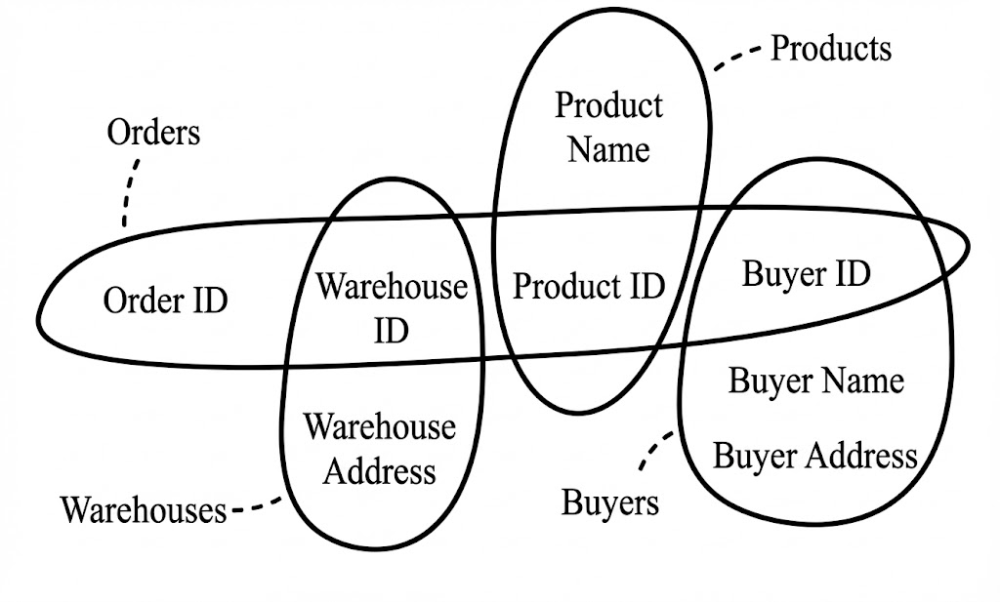

Hongxu Xu

PhD Student (May 2025 – Present)
Supervised by Prof. Chengnian Sun
Cheriton School of Computer Science
University of Waterloo, Canada
B.Sc. in Computer Science (Sep 2014 – Jun 2018)
Beijing Normal University, China
Research Interests
- Software Engineering
- Programming Languages
without a focus yet…
Socials
- GitHub: https://github.com/xuhongxu96
- LinkedIn: https://www.linkedin.com/in/xuhongxu/
- Email: h4️⃣4️⃣5️⃣xu 🌀 uwaterloo.ca
If you’d like to hear more about my thoughts and life, consider following me on:
-
Substack: https://hongxuxu.substack.com/ (English only)
Subscribe to my newsletter on Substack to get my latest updates. -
微信公众号: xuhongxu_it (Chinese only).
Scan the QR code on the right to follow my WeChat Official Account.
扫描右侧二维码 关注我的微信公众号。
Misc.
- Chinese Name: 许宏旭
- Literally means “宏: Great 旭: Rising Sun”
- Pronunciation:
Hong-shyoo(IPA:[xʊŋ ɕy])
Publications
Papers
Nothing yet…
Books
Feb 2024CMake构建实战：项目开发卷 (CMake Build Practice: Project Development Volume)
Published by 人民邮电出版社 (Posts & Telecom Press, China)
Produced by 异步图书 (epubit)
Experience
PhD Student (May 2025 – Present)
Supervised by Prof. Chengnian Sun
Cheriton School of Computer Science
University of Waterloo, Canada
Senior SDE (Sep 2022 – Mar 2025)
Seed/Data Speech Team
ByteDance, Shanghai, China
Led the development of the Text-to-Speech engine and contributed to the Doubao AI assistant application.
SDE-2 (Aug 2021 – Sep 2022)
MSAI Team
Microsoft STC-Asia, Suzhou, China
Led the development of Microsoft WordBreaker and initiated a modern NLP toolkit for Office 365.
SDE (Jul 2018 – Aug 2021)
MSAI Team
Microsoft STC-Asia
Beijing, China (Relocated to Suzhou, Jiangsu, China in May 2019)
Worked on 20-year-old Microsoft WordBreaker.
Short-Term Contributor (Nov 2020 – Jan 2021)
Windows APS Team (temporary assignment)
Microsoft STC-Asia, Suzhou, China
Contributed to the formation of the new team, and Windows 11 application development.
B.Sc. in Computer Science (Sep 2014 – Jun 2018)
Beijing Normal University, China
SDE Intern (Jul 2017 – Dec 2017)
Bing Search Relevance Team
Microsoft STC-Asia, Beijing, China
Answer triggering model development for Bing Search.
Awards
- Outstanding Graduate, Beijing Normal University, 2018
- Top Ten Volunteer, Beijing Normal University, 2015
- First Prize, National Olympiad in Informatics in Provinces (NOIP), 2013
Teaching
Note
IA: Instructional ApprenticeTA: Teaching Assistant
IA, CS 136L - Tools and Techniques for Software Development, Winter 2026IA, CS 246 - Object-Oriented Software Development, Fall 2025TA, CS 246 - Object-Oriented Software Development, Spring 2025
My Thoughts and Life
Note
I share technical content on this website, including course notes, projects, and research.
For more personal thoughts and life updates, please check out my Substack newsletter and WeChat Official Account below.
Tip
Follow me on Substack and WeChat!
Substack: https://hongxuxu.substack.com/ (English only)
Subscribe to my newsletter on Substack to get my latest updates.微信公众号: xuhongxu_it (Chinese only).
Scan the QR code on the right to follow my WeChat Official Account.
扫描右侧二维码 关注我的微信公众号。
Selected Substack Posts
My 2025
G1 Pain Points
CS 452/652: Real-Time Programming (the Train Course)
Spring 25
I dropped this course after I learned that it is really time-consuming.
However, before I dropped it, I did some research and found some useful resources, which I summarized in MarklinSim All-in-One repo.
In short, follow the readme in the repo to set up:
- MarklinSim (an emulator for the train kit)
- QEMU (an emulator for the Raspberry Pi 4B)
- Example Image (your real-time system).
I believe it will save you a lot of time. Good luck!
CS 480/680: Introduction to Machine Learning
Spring 25
This is not a hard course.
\documentclass{article}
\usepackage{fullpage}
\usepackage{float}
\usepackage{amsmath}
\usepackage{amsthm}
\usepackage{mathtools}
\usepackage{amssymb}
\usepackage{graphicx}
\usepackage{listings}
\usepackage{url, hyperref}
\usepackage{algorithm2e}
\usepackage[margin=0.25in]{geometry}
\usepackage{pgfplots}
\pgfplotsset{width=10cm,compat=1.18}
\usepgfplotslibrary{external}
\tikzexternalize
\lstset{basicstyle=\fontfamily{pcr}\footnotesize}
\graphicspath{./}
\newcommand{\paren}[1]{\left( #1 \right)}
\newcommand{\iprod}[1]{\left\langle #1 \right\rangle}
\newcommand*\MY@rightharpoonupfill@{%
\arrowfill@\relbar\relbar\rightharpoonup
}
\newcommand*\overrightharpoon{%
\mathpalette{\overarrow@\MY@rightharpoonupfill@}%
}
\theoremstyle{definition}
\newtheorem{question}{Question}
\DeclareMathOperator*{\argmax}{argmax}
\DeclareMathOperator*{\argmin}{argmin}
\DeclareMathOperator{\tr}{tr}
\DeclareMathOperator{\diag}{diag}
\DeclareMathOperator{\sign}{sign}
\DeclareMathOperator{\Var}{Var}
\DeclarePairedDelimiter\ceil{\lceil}{\rceil}
\DeclarePairedDelimiter\floor{\lfloor}{\rfloor}
\newcommand{\llnorm}[1]{\left\| #1 \right\|_2}
\newcommand{\mnorm}[1]{\left\| #1 \right\|_1}
\newcommand{\fnorm}[1]{\left\| #1 \right\|_F}
\title{\large CS480/680, Spring 2025\\\huge Review Notes}
\author{}
\date{\today}
\setlength\parindent{0pt}
%\input{preamble}
\begin{document}
\maketitle
\newpage
\part{For Mid-Term}
\section{Perceptron}
\begin{question}[Linear Function]
\begin{equation}
\begin{split}
& \forall \alpha \beta \in \mathbb{R}, \forall \boldsymbol{x}, \boldsymbol{z} \in \mathbb{R}^d,
f(\alpha \boldsymbol{x} + \beta \boldsymbol{z}) = \alpha \cdot f(\boldsymbol{X}) + \beta \cdot f(\boldsymbol{z}) \\
\Longleftrightarrow
& \exists \boldsymbol{w} \in \mathbb{R}^d, f(\boldsymbol{x}) = \iprod{\boldsymbol{x}, \boldsymbol{w}}
\end{split}
\end{equation}
\textbf{Proof $\Rightarrow$:}
Let $\boldsymbol{w} \coloneq \left[ f(\boldsymbol{e_1}), \dots, f(\boldsymbol{e_d}) \right]^T$, where
$\boldsymbol{e_i}$ is the $i$-th coordinate vector.
\begin{equation}
\begin{split}
f(\boldsymbol{x}) & = f( x_1 \boldsymbol{e_1} + \dots + x_d \boldsymbol{e_d} ) \\
& = x_1 f(\boldsymbol{e_1}) + \dots + x_d f(\boldsymbol{e_d}) \\
& = \iprod{\boldsymbol{x}, \boldsymbol{w}}
\end{split}
\end{equation}
\textbf{Proof $\Leftarrow$:}
\begin{equation}
\begin{split}
f(\alpha \boldsymbol{x} + \beta \boldsymbol{z}) & = \iprod{\alpha \boldsymbol{x} + \beta \boldsymbol{z}, \boldsymbol{w}} \\
& = \iprod{\alpha \boldsymbol{x}, \boldsymbol{w}} + \iprod{\beta \boldsymbol{z}, \boldsymbol{w}} \\
& = \alpha \iprod{\boldsymbol{x}, \boldsymbol{w}} + \beta \iprod{\boldsymbol{z}, \boldsymbol{w}} \\
& = \alpha f(\boldsymbol{x}) + \beta f(\boldsymbol{z})
\end{split}
\end{equation}
\end{question}
\begin{question}[$\boldsymbol{w}$ is Orthogonal to Decision Boundary $H$]
Any vector on $H$ can be written as $\overrightharpoon{\boldsymbol{x}\boldsymbol{x'}} = \boldsymbol{x'} - \boldsymbol{x}$,
\begin{equation}
\iprod{\boldsymbol{x'} - \boldsymbol{x}, \boldsymbol{w}}
= \iprod{\boldsymbol{x'}, \boldsymbol{w}} - \iprod{\boldsymbol{x}, \boldsymbol{w}}
= -b - (-b) = 0
\end{equation}
\end{question}
\begin{question}[Update Rule for Perceptron]
\begin{equation} \label{perceptron-update-rule}
\begin{split}
\boldsymbol{w} \leftarrow \boldsymbol{w} + y_i \boldsymbol{x_i} \\
b \leftarrow = b + y_i
\end{split}
\end{equation}
\end{question}
\begin{question}[Feasibility of Perceptron]
The goal is to find $\boldsymbol{w} \in \mathbb{R}^d, b \in \mathbb{R}$,
such that $\forall i, y_i \paren{\iprod{\boldsymbol{x_i}, \boldsymbol{w}} + b} > 0$.
According to the update rule \ref{perceptron-update-rule},
\begin{equation}
\begin{split}
y\left[ \iprod{\boldsymbol{x}, \boldsymbol{w_{new}}} + b_{new} \right]
&= y\left[ \iprod{\boldsymbol{x}, \boldsymbol{w_{old} + y \boldsymbol{x}}} + b_{old} + y \right] \\
&= y\left[ \iprod{\boldsymbol{x}, \boldsymbol{w_{old}}} + b_{old} \right] + y\left[ \iprod{\boldsymbol{x} ,y \boldsymbol{x}} + y \right] \\
&= y\left[ \iprod{\boldsymbol{x}, \boldsymbol{w_{old}}} + b_{old} \right] + y\left[ y \llnorm{\boldsymbol{x}}^2 + y \right] \\
&= y\left[ \iprod{\boldsymbol{x}, \boldsymbol{w_{old}}} + b_{old} \right] + y^2 \llnorm{\boldsymbol{x}}^2 + y^2 \\
&= y\left[ \iprod{\boldsymbol{x}, \boldsymbol{w_{old}}} + b_{old} \right] + \underbrace{\llnorm{\boldsymbol{x}}^2 + 1}_{\text{always positive}}
\end{split}
\end{equation}
Notice that $y \in \left\{ \pm 1 \right\} \Rightarrow y^2 = 1$.
$\llnorm{\boldsymbol{x}}^2 + 1$ is always positive, which means we always increase the confidence $y \hat{y}$ after the update.
\end{question}
\begin{question}[Trick for Hiding the Bias Term -- Padding]
\begin{equation}
\begin{split}
\iprod{\boldsymbol{x}, \boldsymbol{w}} + b
& = \iprod{ \begin{pmatrix} \boldsymbol{x} \\ 1 \end{pmatrix}, \begin{pmatrix} \boldsymbol{w} \\ b \end{pmatrix} } \\
& = \iprod{ \boldsymbol{x_{pad}}, \boldsymbol{w_{pad}}}
\end{split}
\end{equation}
Correspondingly, the update rule can be written as:
\begin{equation}
\boldsymbol{w_{pad}} \leftarrow \boldsymbol{w_{pad}} + y \boldsymbol{x_{pad}}
\end{equation}
\end{question}
\begin{question}[Margin]
Suppose $\exists \boldsymbol{w^*}$ such that $\forall i, y_i \iprod{\boldsymbol{x_i}, \boldsymbol{w^*}} > 0$.
We normalize $\boldsymbol{w^*}$ such that $\llnorm{\boldsymbol{w^*}} = 1$.
In other words, $\boldsymbol{w^*}$ is the normalized weight for the deicision boundary.
\begin{equation} \label{margin}
\text{Margin } \gamma \coloneq \min_i \left| \iprod{\boldsymbol{x_i}, \boldsymbol{w^*}} \right|
\end{equation}
\end{question}
\begin{question}[Convergence Theorem -- Linearly Separable Case]
Assume that $\forall i, \llnorm{\boldsymbol{x_i}} \leq C$ (i.e. within a circle with radius $C$).
Then the Perceptron algorithm converges after $\frac{C^2}{\gamma^2}$ mistakes.
\vspace{5mm}
\textbf{Proof:}
Suppose $\boldsymbol{w}$ is the updating weight, and $\theta$ is the angle between $\boldsymbol{w}$ and $\boldsymbol{w^*}$.
We have $\iprod{\boldsymbol{w}, \boldsymbol{w^*}} = \llnorm{\boldsymbol{w}} \llnorm{\boldsymbol{w^*}} \cos{\theta} = \llnorm{\boldsymbol{w}} \cos{\theta}$.
After an update, $\llnorm{\boldsymbol{w_{new}}} \cos{\theta_{new}}$ will be
\begin{equation}
\begin{split}
\iprod{\boldsymbol{w} + y \boldsymbol{x}, \boldsymbol{w^*}}
& = \iprod{\boldsymbol{w}, \boldsymbol{w^*}} + y \iprod{\boldsymbol{x}, \boldsymbol{w^*}} \\
& = \iprod{\boldsymbol{w}, \boldsymbol{w^*}} + \left|\iprod{\boldsymbol{x}, \boldsymbol{w^*}}\right| \\
& \geq \iprod{\boldsymbol{w}, \boldsymbol{w^*}} + \gamma
\end{split}
\end{equation}
Let's see the change of $\iprod{\boldsymbol{w_{new}}, \boldsymbol{w_{new}}} = \llnorm{\boldsymbol{w_{new}}}^2$,
\begin{equation}
\begin{split}
\iprod{\boldsymbol{w} + y \boldsymbol{x}, \boldsymbol{w} + y \boldsymbol{x}}
& = \iprod{\boldsymbol{w}, \boldsymbol{w}} + 2y \iprod{\boldsymbol{w}, \boldsymbol{x}} + y^2 \iprod{\boldsymbol{x}, \boldsymbol{x}} \\
& = \llnorm{\boldsymbol{w}}^2 + 2y \iprod{\boldsymbol{w}, \boldsymbol{x}} + \llnorm{\boldsymbol{x}}^2
\end{split}
\end{equation}
Because $y\iprod{\boldsymbol{w}, \boldsymbol{x}} < 0$ and $\llnorm{\boldsymbol{x}} \leq C$,
\begin{equation}
\begin{split}
\iprod{\boldsymbol{w} + y \boldsymbol{x}, \boldsymbol{w} + y \boldsymbol{x}}
& = \llnorm{\boldsymbol{w}}^2 + 2y \iprod{\boldsymbol{w}, \boldsymbol{x}} + \llnorm{\boldsymbol{x}}^2 \\
& \leq \llnorm{\boldsymbol{w}}^2 + C^2
\end{split}
\end{equation}
Finally, suppose it converges after $M$ updates, we have $\iprod{\boldsymbol{w}, \boldsymbol{w^*}} \geq M \gamma$ and $\llnorm{\boldsymbol{w}}^2 \leq M C^2$
\begin{equation}
\begin{split}
1 = \cos{\theta} & = \frac{\iprod{\boldsymbol{w}, \boldsymbol{w^*}}}{\llnorm{\boldsymbol{w}} \llnorm{\boldsymbol{w^*}}} \\
& \geq \frac{M \gamma}{\sqrt{M C^2} \times 1} \\
& = \sqrt{M} \frac{\gamma}{C}
\end{split}
\end{equation}
which means $M \leq \frac{C^2}{\gamma^2}$.
\end{question}
\begin{question}[Perceptron Loss]
\begin{equation}
\begin{split}
l(\boldsymbol{w}, \boldsymbol{x_t}, y_t)
& = -y_t \iprod{\boldsymbol{w}, \boldsymbol{x_t}} \mathbb{I}[\text{mistake on }\boldsymbol{x_t}] \\
& = -\min \left\{ y_t \iprod{\boldsymbol{w}, \boldsymbol{x_i}}, 0 \right\}
\end{split}
\end{equation}
\begin{equation}
L(\boldsymbol{w}) = -\frac{1}{n} \sum_{t=1}^n y_t \iprod{\boldsymbol{w}, \boldsymbol{x_t}} \mathbb{I} [\text{mistake on }\boldsymbol{x_t}]
\end{equation}
\end{question}
\section{Linear Regression}
\begin{question}[Least Square Regression]
\begin{equation}
\min_{f: \mathcal{X} \rightarrow \mathcal{Y}} \mathbb{E} \llnorm{f(\boldsymbol{X}) - Y}^2
\end{equation}
The optimal regression function is
\begin{equation}
f^*(\boldsymbol{x}) = m(x) = \mathbb{E} [Y | \boldsymbol{X} = \boldsymbol{x}]
\end{equation}
Calculating it needs to know the distribution, i.e., all pairs $(\boldsymbol{X}, Y)$.
\end{question}
\begin{question}[Bias-Variance Decomposition]
\begin{equation}
\begin{split}
\mathbb{E} \llnorm{f(\boldsymbol{X}) - Y}^2
& = \mathbb{E} \llnorm{f(\boldsymbol{X}) - m(x) + m(x) - Y}^2 \\
& = \mathbb{E} \llnorm{f(\boldsymbol{X}) - m(x)}^2 + \mathbb{E} \llnorm{m(x) - Y}^2 + 2 \mathbb{E} \iprod{f(\boldsymbol{X}) - m(x), m(x) - Y} \\
& = \mathbb{E} \llnorm{f(\boldsymbol{X}) - m(x)}^2 + \mathbb{E} \llnorm{m(x) - Y}^2 + \mathbb{E} \; \mathbb{E}_{Y|\boldsymbol{X}} \left[ \iprod{f(\boldsymbol{X}) - m(x), m(x) - Y} \right] \\
& = \mathbb{E} \llnorm{f(\boldsymbol{X}) - m(x)}^2 + \mathbb{E} \llnorm{m(x) - Y}^2 + \mathbb{E} \iprod{f(\boldsymbol{X}) - m(x), m(x) - \mathbb{E}_{Y|\boldsymbol{X}} [Y]} \\
& = \mathbb{E} \llnorm{f(\boldsymbol{X}) - m(x)}^2 + \mathbb{E} \llnorm{m(x) - Y}^2 + \mathbb{E} \iprod{f(\boldsymbol{X}) - m(x), m(x) - m(x)} \\
& = \mathbb{E} \llnorm{f(\boldsymbol{X}) - m(x)}^2 + \underbrace{\mathbb{E} \llnorm{m(x) - Y}^2}_{\text{noise (variance)}}
\end{split}
\end{equation}
The last term is the noise (variance), irrelevant to $f$.
So, to minimize the squared error, we need $f \approx m$.
However, $m(\boldsymbol{x})$ is incalculable, because $\mathbb{E} [Y | \boldsymbol{X} = \boldsymbol{x}]$ is unknown.
Let's learn $f_D$ from the training data $D$. Define $\bar{f}(\boldsymbol{X}) = \mathbb{E}_D[f_D(\boldsymbol{X})]$.
\begin{equation}
\begin{split}
\underbrace{\mathbb{E}_{\boldsymbol{X}, Y, D} \llnorm{f_D(\boldsymbol{X}) - Y}^2}_{\text{test error}}
& = \mathbb{E}_{\boldsymbol{X}} \llnorm{f_D(\boldsymbol{X}) - m(x)}^2 + \underline{\mathbb{E}_{\boldsymbol{X}, Y} \llnorm{m(x) - Y}^2} \\
& = \mathbb{E}_{\boldsymbol{X}, D} \llnorm{f_D(\boldsymbol{X}) - \bar{f}(\boldsymbol{X}) + \bar{f}(\boldsymbol{X}) - m(x)}^2 + \underline{\mathbb{E}_{\boldsymbol{X}, Y} \llnorm{m(x) - Y}^2} \\
& = \mathbb{E}_{\boldsymbol{X}, D} \llnorm{f_D(\boldsymbol{X}) - \bar{f}(\boldsymbol{X})}^2 + \mathbb{E}_{\boldsymbol{X}} \llnorm{\bar{f}(\boldsymbol{X}) - m(x)}^2 \\
& \qquad + 2 \mathbb{E}_{\boldsymbol{X}, D} \iprod{f_D(\boldsymbol{X}) - \bar{f}(\boldsymbol{X}), \bar{f}(\boldsymbol{X}) - m(x)} \\
& \qquad + \underline{\mathbb{E}_{\boldsymbol{X}, Y} \llnorm{m(x) - Y}^2} \\
& = \dots + 2 \mathbb{E}_{\boldsymbol{X}} \mathbb{E}_{D} \iprod{f_D(\boldsymbol{X}) - \bar{f}(\boldsymbol{X}), \bar{f}(\boldsymbol{X}) - m(x)} + \underline{\dots} \\
& = \dots + 2 \mathbb{E}_{\boldsymbol{X}} \iprod{\mathbb{E}_{D} [f_D(\boldsymbol{X})] - \bar{f}(\boldsymbol{X}), \bar{f}(\boldsymbol{X}) - m(x)} + \underline{\dots} \\
& = \dots + 2 \mathbb{E}_{\boldsymbol{X}} \iprod{\bar{f}(\boldsymbol{X}) - \bar{f}(\boldsymbol{X}), \bar{f}(\boldsymbol{X}) - m(x)} + \underline{\dots} \\
& = \dots + 0 + \underline{\dots} \\
& = \mathbb{E}_{\boldsymbol{X}, D} \llnorm{f_D(\boldsymbol{X}) - \bar{f}(\boldsymbol{X})}^2 + \mathbb{E}_{\boldsymbol{X}} \llnorm{\bar{f}(\boldsymbol{X}) - m(x)}^2 + \underline{\mathbb{E}_{\boldsymbol{X}, Y} \llnorm{m(x) - Y}^2} \\
& = \underbrace{\mathbb{E}_{\boldsymbol{X}, D} \llnorm{f_D(\boldsymbol{X}) - \mathbb{E}_D [f_D(\boldsymbol{X})]}^2}_{\text{variance}} + \underbrace{\mathbb{E}_{\boldsymbol{X}} \llnorm{\mathbb{E}_D [f_D(\boldsymbol{X})] - m(x)}^2}_{\text{bias}^2} + \underbrace{\mathbb{E}_{\boldsymbol{X}, Y} \llnorm{m(x) - Y}^2}_{\text{noise (variance)}} \\
\end{split}
\end{equation}
\end{question}
\begin{question}[Sampling $\rightarrow$ Training]
Replace expectation with sample average: $\paren{\boldsymbol{X_i}, Y_i} \tilde P$.
\begin{equation}
\min_{f: \mathcal{X} \rightarrow \mathcal{Y}} \hat{\mathbb{E}} \llnorm{f(\boldsymbol{X}) - Y}^2 \coloneq \frac{1}{n} \sum_{i=1}^n \llnorm{f(\boldsymbol{X_i}) - Y_i}^2
\end{equation}
Uniform law of large numbers: as training data size $n \rightarrow \argmin \mathbb{E}$,
$\hat{\mathbb{E}} \rightarrow \mathbb{E}$ and (hopefully) $\argmin \hat{\mathbb{E}} \rightarrow \mathbb{E}$.
\end{question}
\begin{question}[Linear Regression]
Padding: $\boldsymbol{x} \leftarrow \begin{pmatrix}\boldsymbol{x} \\ 1\end{pmatrix}$, $W \leftarrow \begin{pmatrix}W \\ \boldsymbol{b}\end{pmatrix}$
\begin{align*}
X & = [\boldsymbol{x_1}, \dots, \boldsymbol{x_n}] \in \mathbb{R}^{(d+1) \times n}, \\
Y & = [\boldsymbol{y_1}, \dots, \boldsymbol{y_n}] \in \mathbb{R}^{t \times n}, \\
W & \in \mathbb{R}^{t \times (d+1)}, \\
\fnorm{A} & = \sqrt{\sum_{ij} a_{ij}^2}
\end{align*}
Linear regression is:
\begin{equation}
\min_{W \in \mathbb{R}^{t \times (d+1)}} \frac{1}{n} \fnorm{WX - Y}^2
\end{equation}
\end{question}
\begin{question}[Optimality Condition]
If $\boldsymbol{w}$ is a minimizer (or maximizer) of a differentiable function $f$
\textbf{over an open set}, then $f'(\boldsymbol{w}) = 0$.
\end{question}
\begin{question}[Solving Linear Regression]
\begin{equation}
L(W) = \frac{1}{n} \fnorm{WX-Y}^2
\end{equation}
\begin{equation}
\begin{split}
\nabla_W L(W) & = \frac{2}{n} (WX-Y) X^T = 0 \\
& \Rightarrow W X X^T = Y X^T \\
& \Rightarrow W = Y X^T (X X^T)^{-1} \\
\end{split}
\end{equation}
\end{question}
\begin{question}[Ill-Conditioning]
Slight pertubation leads to chaotic behavior, which happens whenever
$X$ is ill-conditioned, i.e., (close to) rank-deficient.
\vspace{5mm}
Rank-deficient X means:
\begin{enumerate}
\item two columns in $X$ are linearly dependent (or simply the same)
\item but the corresponding $y$ might be different
\end{enumerate}
\end{question}
\begin{question}[Ridge Regression]
\begin{equation}
\min_{W} \frac{1}{n} \fnorm{WX - Y}^2 + \lambda \fnorm{W}^2
\end{equation}
\begin{equation}
\begin{split}
\nabla_W L(W) & = \frac{2}{n} (WX - Y) X^T + 2 \lambda W = 0 \\
& \Rightarrow W X X^T - Y X^T + \lambda W = 0 \\
& \Rightarrow W (X X^T + n \lambda I) = Y X^T
\end{split}
\end{equation}
\begin{equation}
\begin{split}
& X = U \Sigma V^T \\
\Rightarrow & X X^T = U \Sigma (V^T V) \Sigma U^T = U \Sigma^2 U^T \\
\Rightarrow & X X^T + n \lambda I = U \underbrace{(\Sigma^2 + n \lambda I)}_{\text{strictly positive}} U^T \\
\Rightarrow & X X^T + n \lambda I \text{ is of full-rank}
\end{split}
\end{equation}
$\lambda$ is regularization parameter. $\lambda = \infty \Rightarrow W \equiv \boldsymbol{0}$.
\end{question}
\begin{question}[Regularization $\equiv$ Data Augmentation]
\begin{equation}
\frac{1}{n} \fnorm{WX - Y}^2 + \lambda \fnorm{W}^2
= \frac{1}{n} \fnorm{W \left[X \quad \sqrt{n\lambda} I \right] - \left[Y \quad \boldsymbol{0}\right]}^2
\end{equation}
\end{question}
\section{Logistic Regression}
\begin{question}[Max Likelihood Estimation]
Let $\mathcal{Y} = \{0, 1\}$.
Learn confidence $p(\boldsymbol{x}; \boldsymbol{w}) \coloneq \Pr (Y=1|X=\boldsymbol{x})$.
\begin{equation}
\begin{split}
\max_{\boldsymbol{w}} \Pr (Y_1 = y_1, \dots, Y_n = y_n)
& = \max_{\boldsymbol{w}} \prod_{i=1}^n \Pr (Y_i = y_i | X_i = x_i) \\
& \stackrel{\mathcal{Y}=\{0, 1\}}{=} \max_{\boldsymbol{w}} \prod_{i=1}^n \left[p(\boldsymbol{x_i}; \boldsymbol{w})\right]^{y_i} \left[1 - p(\boldsymbol{x_i}; \boldsymbol{w})\right]^{1 - y_i} \\
\end{split}
\end{equation}
Use negative log-likelihood:
\begin{equation}
\min_{\boldsymbol{w}} \sum_{i=1}^n \left[ -y_i \log p(\boldsymbol{x_i}; \boldsymbol{w}) - (1 - y_i) \log (1 - p(\boldsymbol{x_i}; \boldsymbol{w})) \right]
\end{equation}
\end{question}
\begin{question}[Odds Ratio and Sigmoid]
\begin{equation}
\text{Odds Ratio} = \frac{\Pr}{1 - \Pr}
\end{equation}
Assume $\log \frac{p(\boldsymbol{x};\boldsymbol{w})}{1 - p(\boldsymbol{x};\boldsymbol{w})} = \iprod{\boldsymbol{x}, \boldsymbol{w}}$.
\vspace{5mm}
The Sigmoid transformation is:
\begin{equation}
p(\boldsymbol{x}; \boldsymbol{w}) = \frac{1}{1 + \exp (-\iprod{\boldsymbol{x}, \boldsymbol{w}})}
\end{equation}
\end{question}
\begin{question}[Logistic Regression]
Plug the sigmoid in the negative log-likelihood:
\begin{equation}
\begin{split}
& \min_{\boldsymbol{w}} \sum_{i=1}^n \left[ -y_i \log p(\boldsymbol{x_i}; \boldsymbol{w}) - (1 - y_i) \log (1 - p(\boldsymbol{x_i}; \boldsymbol{w})) \right] \\
= & \min_{\boldsymbol{w}} \sum_{i=1}^n \left[ y_i \log [1 + \exp(-\iprod{\boldsymbol{x_i}, \boldsymbol{w}})] - (1 - y_i) \log \left(1 - \frac{1}{1 + \exp (-\iprod{\boldsymbol{x_i}, \boldsymbol{w}})}\right) \right] \\
= & \min_{\boldsymbol{w}} \sum_{i=1}^n \left[ y_i \log [1 + \exp(-\iprod{\boldsymbol{x_i}, \boldsymbol{w}})] - (1 - y_i) \log \left(\frac{\exp (-\iprod{\boldsymbol{x_i}, \boldsymbol{w}})}{1 + \exp (-\iprod{\boldsymbol{x}, \boldsymbol{w}})}\right) \right] \\
= & \min_{\boldsymbol{w}} \sum_{i=1}^n \left[ y_i \log [1 + \exp(-\iprod{\boldsymbol{x_i}, \boldsymbol{w}})] + (1 - y_i) \left[\iprod{\boldsymbol{x_i}, \boldsymbol{w}} + \log(1 + \exp (-\iprod{\boldsymbol{x}, \boldsymbol{w}}))\right] \right] \\
= & \min_{\boldsymbol{w}} \sum_{i=1}^n \left[ \log [1 + \exp(-\iprod{\boldsymbol{x_i}, \boldsymbol{w}})] + (1 - y_i) \iprod{\boldsymbol{x_i}, \boldsymbol{w}} \right] \\
\end{split}
\end{equation}
Because $y_i \in \{0, 1\}$, let's map it to $\{\pm 1\}$.
\begin{equation}
\begin{split}
L(\boldsymbol{w})
& \stackrel{y_i \in \{0, 1\}}{=} \log [1 + \exp(-\iprod{\boldsymbol{x_i}, \boldsymbol{w}})] + (1 - y_i) \iprod{\boldsymbol{x_i}, \boldsymbol{w}} \\
& \stackrel{y_i \in \{0, 1\}}{=} \log [1 + \exp(-\iprod{\boldsymbol{x_i}, \boldsymbol{w}})] + \log \left[ \exp ( (1 - y_i) \iprod{\boldsymbol{x_i}, \boldsymbol{w}} ) \right] \\
& \stackrel{y_i \in \{0, 1\}}{=} \log [1 + \exp(-\iprod{\boldsymbol{x_i}, \boldsymbol{w}}) \cdot \exp ( (1 - y_i) \iprod{\boldsymbol{x_i}, \boldsymbol{w}} ) ] \\
& \stackrel{y_i \in \{0, 1\}}{=} \log [\exp((1-y_i)\iprod{\boldsymbol{x_i}, \boldsymbol{w}}) + \exp(-y_i \iprod{\boldsymbol{x_i}, \boldsymbol{w}})] \\
& \stackrel{y_i \in \{0, 1\}}{=} \begin{cases}
\log [\exp(\iprod{\boldsymbol{x_i}, \boldsymbol{w}}) + 1] & y_i = 0 \\
\log [1 + \exp(-\iprod{\boldsymbol{x_i}, \boldsymbol{w}})] & y_i = 1
\end{cases} \\
& \stackrel{y_i \in \{\pm 1\}}{=} \log [ 1 + \exp(-y_i \iprod{\boldsymbol{x_i}, \boldsymbol{w}}) ]
\end{split}
\end{equation}
\end{question}
\begin{question}[Multi-Class: Sigmoid $\rightarrow$ Softmax]
\begin{equation}
\Pr(Y=k | X = \boldsymbol{x}; \boldsymbol{W} = [\boldsymbol{w_1}, \dots, \boldsymbol{w_c}])
= \frac{\exp(\iprod{\boldsymbol{x}, \boldsymbol{w_k}})}{\sum_{l=1}^c \exp(\iprod{\boldsymbol{x}, \boldsymbol{w_l}})}
\end{equation}
Maximum likelihood estimation (log loss, cross-entropy loss):
\begin{equation}
\min_{\boldsymbol{W}} \sum_{i=1}^n \left[ -\log \frac{\exp(\iprod{\boldsymbol{x}, \boldsymbol{w_k}})}{\sum_{l=1}^c \exp(\iprod{\boldsymbol{x}, \boldsymbol{w_l}})} \right]
\end{equation}
\end{question}
\section{Hard-Margin Support Vector Machines}
\begin{question}[Distance from a Point to a Hyperplane]
Let $H \coloneq \{\boldsymbol{x}: \iprod{\boldsymbol{x}, \boldsymbol{w}} + b = 0\}$, $\boldsymbol{x}$ be any vector in $H$.
\begin{equation}
\text{Distance}(\boldsymbol{x_i}, \boldsymbol{w})
= \frac{|\iprod{\boldsymbol{x_i} - \boldsymbol{x}, \boldsymbol{w}}|}{\llnorm{\boldsymbol{w}}}
= \frac{|\iprod{\boldsymbol{x_i}, \boldsymbol{w}} - \iprod{\boldsymbol{x}, \boldsymbol{w}}|}{\llnorm{\boldsymbol{w}}}
\stackrel{\boldsymbol{x} \in H}{=} \frac{|\iprod{\boldsymbol{x_i}, \boldsymbol{w}} + b|}{\llnorm{\boldsymbol{w}}}
\stackrel{y_i \hat{y_i} > 0}{=} \frac{y_i \hat{y_i}}{\llnorm{\boldsymbol{w}}}
\end{equation}
\end{question}
\begin{question}[Margin Maximization]
Margin is the smallest distance to $H$ among all separable data.
\begin{equation}
\max_{\boldsymbol{w}, b} \min_i \frac{y_i \hat{y_i}}{\llnorm{\boldsymbol{w}}}
\text{, such that }
\forall i, y_i \hat{y_i} > 0
\end{equation}
Let $c > 0$, then $\boldsymbol{w} = c\boldsymbol{w}, b = cb$ keeps the loss same:
\begin{equation}
\begin{split}
\max_{\boldsymbol{w}, b} \min_i \frac{c y_i \hat{y_i}}{\llnorm{c\boldsymbol{w}}}
& = \max_{\boldsymbol{w}, b} \min_i \frac{y_i (\iprod{\boldsymbol{x}, c\boldsymbol{w}} + cb)}{\llnorm{c\boldsymbol{w}}} \\
& = \max_{\boldsymbol{w}, b} \min_i \frac{c y_i (\iprod{\boldsymbol{x}, \boldsymbol{w}} + b)}{c \llnorm{\boldsymbol{w}}} \\
& = \max_{\boldsymbol{w}, b} \min_i \frac{y_i (\iprod{\boldsymbol{x}, \boldsymbol{w}} + b)}{\llnorm{\boldsymbol{w}}} \\
& = \max_{\boldsymbol{w}, b} \min_i \frac{y_i \hat{y_i}}{\llnorm{\boldsymbol{w}}}
\end{split}
\end{equation}
Let $c = \frac{1}{\min_i y_i \hat{y_i}}$,
\begin{equation}
\begin{split}
\max_{\boldsymbol{w}, b} \min_i \frac{c y_i \hat{y_i}}{c \llnorm{\boldsymbol{w}}}
& = \max_{\boldsymbol{w}, b} \frac{1}{c \llnorm{\boldsymbol{w}}} \\
& = \max_{\boldsymbol{w}, b} \frac{1}{\llnorm{\boldsymbol{w}}} \text{ s.t. } \min_i y_i \hat{y_i} = 1
\end{split}
\end{equation}
Max $\rightarrow$ Min:
\begin{equation}
\min_{\boldsymbol{w}, b} \frac{1}{2} \llnorm{\boldsymbol{w}}^2 \text{ s.t. } \forall i, y_i \hat{y_i} \geq 1
\end{equation}
\end{question}
\begin{question}[Hard-Margin SVM v.s. Perceptron]
\begin{align}
\text{Hard-Margin SVM:} \qquad
& \min_{\boldsymbol{w}, b} \frac{1}{2} \llnorm{\boldsymbol{w}}^2 & \text{ s.t. } \forall i, y_i \hat{y_i} \geq 1 \\
\text{Perceptron:} \qquad
& \min_{\boldsymbol{w}, b} 0 & \text{ s.t. } \forall i, y_i \hat{y_i} \geq 1
\end{align}
\end{question}
\begin{question}[Lagrangian Dual]
Dual variables $\boldsymbol{\alpha} \in \mathbb{R}^n$.
\begin{equation}
\begin{split}
\min_{\boldsymbol{w}, b} \; \max_{\boldsymbol{\alpha} \geq 0} \; \frac{1}{2} \llnorm{\boldsymbol{w}}^2 - \sum_i \alpha_i \left[ y_i (\iprod{\boldsymbol{x_i}, \boldsymbol{w}} + b) - 1 \right]
& = \min_{\boldsymbol{w}, b} \; \begin{cases}
+ \infty, & \text{if } \exists i, y_i (\iprod{\boldsymbol{x_i}, \boldsymbol{w}} + b) < 1 \quad (\alpha_i = + \infty) \\
\frac{1}{2} \llnorm{\boldsymbol{w}}^2 , & \text{if } \forall i, y_i (\iprod{\boldsymbol{x_i}, \boldsymbol{w}} + b) \geq 1 \quad (\forall i, \alpha_i = 0) \\
\end{cases} \\
& = \min_{\boldsymbol{w}, b} \; \frac{1}{2} \llnorm{\boldsymbol{w}}^2, \quad \text{s.t. } \forall i, y_i (\iprod{\boldsymbol{x_i}, \boldsymbol{w}} + b) \geq 1 \\
& = \min_{\boldsymbol{w}, b} \frac{1}{2} \llnorm{\boldsymbol{w}}^2 \text{ s.t. } \forall i, y_i \hat{y_i} \geq 1
\end{split}
\end{equation}
Swap $\min$ and $\max$:
\begin{equation} \label{lagrangian-max-min}
\max_{\boldsymbol{\alpha} \geq 0} \; \min_{\boldsymbol{w}, b} \; \frac{1}{2} \llnorm{\boldsymbol{w}}^2 - \sum_i \alpha_i \left[ y_i (\iprod{\boldsymbol{x_i}, \boldsymbol{w}} + b) - 1 \right]
\end{equation}
Solve inner problem by setting derivative to 0:
\begin{equation} \label{solve-derivative-for-svm-dual}
\frac{\delta}{\delta \boldsymbol{w}} = \boldsymbol{w} - \sum_i \alpha_i y_i \boldsymbol{x_i} = 0,
\qquad
\frac{\delta}{\delta b} = - \sum_i \alpha_i y_i = 0,
\end{equation}
Plug them into the loss:
\begin{equation}
\begin{split}
L(\boldsymbol{\alpha})
& = \min_{\boldsymbol{w}, b} \; \frac{1}{2} \llnorm{\boldsymbol{w}}^2 - \sum_i \alpha_i \left[ y_i (\iprod{\boldsymbol{x_i}, \boldsymbol{w}} + b) - 1 \right] \\
& = \frac{1}{2} \llnorm{\sum_i \alpha_i y_i \boldsymbol{x_i}}^2 - \sum_i \alpha_i y_i \iprod{\boldsymbol{x_i}, \boldsymbol{w}} - \sum_i \alpha_i y_i b + \sum_i \alpha_i \\
& = \frac{1}{2} \llnorm{\sum_i \alpha_i y_i \boldsymbol{x_i}}^2 - \iprod{\sum_i \alpha_i y_i \boldsymbol{x_i}, \sum_i \alpha_i y_i \boldsymbol{x_i}} - b \sum_i \alpha_i y_i + \sum_i \alpha_i \\
& = \frac{1}{2} \llnorm{\sum_i \alpha_i y_i \boldsymbol{x_i}}^2 - \llnorm{\sum_i \alpha_i y_i \boldsymbol{x_i}}^2 + \sum_i \alpha_i \\
& = \sum_i \alpha_i - \frac{1}{2} \llnorm{\sum_i \alpha_i y_i \boldsymbol{x_i}}^2,
\qquad \text{s.t. } \sum_i \alpha_i y_i = 0
\end{split}
\end{equation}
So, \ref{lagrangian-max-min} is solved as:
\begin{equation}
\max_{\boldsymbol{\alpha} \geq 0} \sum_i \alpha_i - \frac{1}{2} \llnorm{\sum_i \alpha_i y_i \boldsymbol{x_i}}^2,
\qquad \text{s.t. } \sum_i \alpha_i y_i = 0
\end{equation}
Max $\rightarrow$ min and expand the norm:
\begin{equation}
\min_{\boldsymbol{\alpha} \geq 0} - \sum_i \alpha_i + \frac{1}{2} \sum_i \sum_j \alpha_i \alpha_j y_i y_j \underbrace{\iprod{\boldsymbol{x_i}, \boldsymbol{x_j}}}_{\text{Kernel, closed form w.r.t. }\boldsymbol{x_i}, \boldsymbol{x_j}},
\qquad \text{s.t. } \sum_i \alpha_i y_i = 0
\end{equation}
\end{question}
\begin{question}[Support Vectors]
From \ref{solve-derivative-for-svm-dual}, we know $\boldsymbol{w} = \sum_i \alpha_i y_i \boldsymbol{x_i}$.
Vectors with $\alpha_i \neq 0$ are support vectors, which lie on the margin.
\end{question}
\section{Soft-Margin Support Vector Machines}
\begin{question}[Goal]
minimize over $\boldsymbol{w}, b$,
\begin{equation}
\Pr(Y \neq \sign(\hat Y)) = \Pr(Y \hat Y \leq 0)
= \mathbb{E} \; \underbrace{\mathbb{I} [Y \hat Y \leq 0]}_{indicator function}
\coloneq \mathbb{E} \; l_{0-1}(Y \hat Y)
\end{equation}
where $\hat Y = \iprod{X, \boldsymbol{w}} + b, Y = \pm 1$.
\begin{equation}
\begin{split}
\min_{\hat Y: \mathcal{X} \rightarrow \mathbb{R}} \mathbb{E} \; l_{0-1}(Y \hat Y)
& = \min_{\hat Y: \mathcal{X} \rightarrow \mathbb{R}} \mathbb{E}_X \mathbb{E}_{Y|X} \; l_{0-1}(Y \hat Y) \\
& = \mathbb{E}_X \min_{\hat Y: \mathcal{X} \rightarrow \mathbb{R}} \mathbb{E}_{Y|X} \; l_{0-1}(Y \hat Y) \\
\end{split}
\end{equation}
Minimizing the 0-1 error is \textbf{NP-hard}.
\end{question}
\begin{question}[Bayes Rule]
\begin{equation}
\eta(\boldsymbol{x}) \coloneq \argmax_{\hat y \in \mathbb{R}} \Pr (Y = \hat y | X = \boldsymbol{x})
\end{equation}
\begin{equation}
\eta(\boldsymbol{x}) \coloneq \argmin_{\hat y \in \mathbb{R}} \mathbb{E}_{Y|X=\boldsymbol{x}} \; l_{0-1}(Y \hat y)
\end{equation}
\end{question}
\begin{question}[Classification Calibrated]
A loss $l(y \hat y)$ is classification calibrated, iff $\forall \boldsymbol{x}$,
\begin{equation*}
\hat y(\boldsymbol{x}) \coloneq \argmin_{\hat y \in \mathbb{R}} \mathbb{E}_{Y | X = \boldsymbol{x}} \; l(Y \hat y)
\end{equation*}
has the same sign as the Bayes rule $\eta(\boldsymbol{x}) \coloneq \argmin_{\hat y \in \mathbb{R}} \mathbb{E}_{Y|X=\boldsymbol{x}} \; l_{0-1}(Y \hat y)$
Notice: $\eta(\boldsymbol{x}), \hat y (\boldsymbol{x})$ provide the \textbf{score}, their sign provides the prediction.
\end{question}
\begin{question}[Characterization under Convexity]
Any \textbf{convex} loss $l$ is classification calibrated iff $l$ is differentiable
at $0$ and $l'(0) < 0$.
\end{question}
\begin{question}[Hinge Loss]
\begin{equation}
l_{hinge}(y \hat y) = (1 - y \hat y)^+ \coloneq \max \{0, 1 - y \hat y\}
= \begin{cases}
1 - y \hat y, & \text{if } y \hat y < 1 \\
0, & \text{otherwise}
\end{cases}
\end{equation}
The classifier that minimizes the expected hinge loss minimizes the expected 0-1 loss.
\end{question}
\begin{question}[Soft-Margin SVM]
\begin{equation}
\min_{\boldsymbol{w}, b} \frac{1}{2} \llnorm{\boldsymbol{w}}^2 + C \cdot \sum_i l_{hinge}(y_i \hat y_i), \quad \text{s.t. } \hat y_i = \iprod{\boldsymbol{x_i}, \boldsymbol{w}} + b
\end{equation}
\end{question}
\begin{question}[Lagrangian Dual]
Apply $C \cdot l_{hinge}(t) \coloneq \max\{0, C(1 - t)\} = \max_{0 \leq \alpha \leq C} \alpha (1 - t)$
\begin{equation}
\min_{\boldsymbol{w}, b} \max_{0 \leq \boldsymbol{\alpha} \leq C} \frac{1}{2} \llnorm{\boldsymbol{w}}^2 + \sum_i \alpha_i (1 - y_i \hat y_i)
\end{equation}
Swap $\min$ with $\max$:
\begin{equation}
\max_{0 \leq \boldsymbol{\alpha} \leq C} \min_{\boldsymbol{w}, b} \frac{1}{2} \llnorm{\boldsymbol{w}}^2 + \sum_i \alpha_i (1 - y_i \hat y_i)
\end{equation}
Solve it by setting derivative to 0:
\begin{equation}
\frac{\delta}{\delta \boldsymbol{w}} = \boldsymbol{w} - \sum_i \alpha_i y_i \boldsymbol{x_i} = 0,
\qquad
\frac{\delta}{\delta b} = - \sum_i \alpha_i y_i = 0,
\end{equation}
Plug them into the loss:
\begin{equation}
\begin{split}
\max_{0 \leq \boldsymbol{\alpha} \leq C} \min_{\boldsymbol{w}, b} \frac{1}{2} \llnorm{\boldsymbol{w}}^2 + \sum_i \alpha_i (1 - y_i \hat y_i)
& = \max_{0 \leq \boldsymbol{\alpha} \leq C} \min_{\boldsymbol{w}, b} \; \frac{1}{2} \llnorm{\boldsymbol{w}}^2 + \sum_i \alpha_i \left[ 1 - y_i (\iprod{\boldsymbol{x_i}, \boldsymbol{w}} + b) \right] \\
& = \max_{0 \leq \boldsymbol{\alpha} \leq C} \sum_i \alpha_i - \frac{1}{2} \llnorm{\sum_i \alpha_i y_i \boldsymbol{x_i}}^2,
\qquad \text{s.t. } \sum_i \alpha_i y_i = 0
\end{split}
\end{equation}
Max $\rightarrow$ min and expand the norm:
\begin{equation}
\min_{0 \leq \boldsymbol{\alpha} \leq C} - \sum_i \alpha_i + \frac{1}{2} \sum_i \sum_j \alpha_i \alpha_j y_i y_j \underbrace{\iprod{\boldsymbol{x_i}, \boldsymbol{x_j}}}_{\text{Kernel, closed form w.r.t. }\boldsymbol{x_i}, \boldsymbol{x_j}},
\qquad \text{s.t. } \sum_i \alpha_i y_i = 0
\end{equation}
$C \rightarrow \infty \Rightarrow \text{Hard-margin SVM}$,
$C \rightarrow 0 \Rightarrow \text{a constant classifier}$
\end{question}
\section{Reproducing Kernels}
\begin{question}[(Reproducing) Kernels]
$k: \mathcal(X) \times \mathcal{X} \rightarrow \mathbb{R}$ is a (reproducing) kernel
iff there exists some $\Phi: \mathcal{X} \rightarrow \mathcal{H}$ so that
$\iprod{\Phi(\boldsymbol{x}), \Phi(\boldsymbol{z})} = k(\boldsymbol{x}, \boldsymbol{z})$.
\begin{itemize}
\item A feature transform $\Phi$ determines the corresponding kernel $k$.
\item A kernel $k$ determines some feature transforms $\Phi$, but may not be unique. \\
E.g. $\iprod{\phi(\boldsymbol{x}), \phi(\boldsymbol{z})} = \iprod{\phi'(\boldsymbol{x}), \phi'(\boldsymbol{z})}$
\begin{enumerate}
\item $\phi(x) \coloneq [x_1^2, \sqrt{2} x_1 x_2] \in \mathbb{R}^2$
\item $\phi'(x) \coloneq [x_1^2, x_1 x_2, x_1 x_2] \in \mathbb{R}^3$
\end{enumerate}
\end{itemize}
\end{question}
\begin{question}[Mercer's Theorem]
$k: \mathcal{X} \times \mathcal{X} \rightarrow \mathbb{R}$ is a kernel, \\
iff $\forall n \in \mathbb{N}, \forall \boldsymbol{x_1}, \dots, \boldsymbol{x_n} \in \mathcal{X}$,
the kernel matrix $K$ such that $K_{ij} \coloneq k(\boldsymbol{x_i}, \boldsymbol{x_j})$ is symmetric and positive semi-definite (PSD).
\begin{equation}
k \text{ is a kernel} \Leftrightarrow \begin{cases}
K_{ij} = K_{ji} & \text{(symmetric)}\\
\iprod{\boldsymbol{\alpha}, K \boldsymbol{\alpha}} = \sum_{i=1}^n \sum_{j=1}^n \alpha_i \alpha_j K_{ij} \geq 0 \qquad \forall \boldsymbol{\alpha} \in \mathbb{R}^n & \text{(PSD)}
\end{cases}
\end{equation}
\end{question}
\begin{question}[Symmetric PSD]
For a symmetric matrix $A$, the following conditions are equivalent.
\begin{enumerate}
\item $A \succeq 0$
\item $A = U^T U$ for some matrix $U$
\item $x^T A x \geq 0$ for every $x \in \mathbb{R}^n$
\item All principal minors of $A$ are nonnegative
\end{enumerate}
\end{question}
\section{Gradient Descent}
\begin{question}[Gradient Descent Template]
Choose initial point $x^{(0)} \in \mathbb{R}^d$ and repeat:
\begin{equation}
x^{(k)} = x^{(k-1)} - \underbrace{\eta}_{\text{step size}} \nabla f(x^{(k-1)}), \quad k = 1, 2, \dots
\end{equation}
\end{question}
\begin{question}[Interpretation from Taylor Expansion]
Expand $f$ locally at $x$:
\begin{equation}
\begin{split}
f(y) & \approx f(x) + \nabla f(x)^T(y-x) + \frac{1}{2t}\llnorm{y-x}^2 \\
\Rightarrow \min_y f(y) & \approx \min_y \left[ f(x) + \nabla f(x)^T(y-x) + \frac{1}{2t}\llnorm{y-x}^2 \right] \\
\end{split}
\end{equation}
When $y - x = \frac{\nabla f(x)}{-2 \frac{1}{2t}} = -t \nabla f(x) \Longrightarrow y = x - t \nabla f(x)$, it reaches the minimum.
\end{question}
\begin{question}[$L$-smooth or $L$-Lipschitz Continuous]
$f$ is convex and differentiable. $\nabla f$ is $L$-Lipschitz continuous ($L$-smooth):
\begin{equation}
L \boldsymbol{I} \succeq \nabla^2 f(x), \forall x
\end{equation}
\end{question}
\begin{question}[Convergence Rate for Convex Case]
Assume $f$ is $L$-smooth.
Gradient descent with fixed step size $t \leq \frac{1}{L}$ satisfies:
\begin{equation}
f(x^{(k)}) - f(x^*) \leq \frac{\llnorm{x^{(0)} - x^*}^2}{2tk}
\end{equation}
We say gradient descent has convergence rate $O(\frac{1}{k})$,
i.e. $f(x^{(k)}) - f(x^*) \leq \epsilon$ can be achieved using only $O(\frac{1}{\epsilon})$ iterations.
\vspace{5mm}
\textbf{Proof}
\begin{equation}
\begin{split}
f(y)
& = f(x) + \nabla f(x)^T (y-x) + \frac{1}{2} (y-x)^T \nabla^2 f(\xi)(y-x) \\
& \leq f(x) + \nabla f(x)^T(y-x) + \frac{1}{2} L \llnorm{y-x}^2 \qquad (L\text{-smooth}, L \boldsymbol{I} \succeq \nabla^2 f(\xi))
\end{split}
\end{equation}
Plug in gradient descent:
\begin{equation} \label{convergence-1}
\begin{split}
f(x^+)
& = f(y) \\
& \leq f(x) + \nabla f(x)^T(x - t\nabla f(x)-x) + \frac{1}{2} L \llnorm{x - t\nabla f(x)-x}^2 \\
& = f(x) -(1 - \frac{1}{2}Lt) t \llnorm{\nabla f(x)}^2 \\
& \leq f(x) - \frac{1}{2} t \llnorm{\nabla f(x)}^2 \quad (t \leq \frac{1}{L})
\end{split}
\end{equation}
$f$ is convex $\Rightarrow f(x^*) \geq f(x) + \nabla f(X)^T(x^* - x) \Rightarrow f(x) \leq f(x^*) + \nabla f(x)^T(x - x^*)$
Plug this into \ref{convergence-1}:
\begin{equation}
\begin{split}
& f(x^+) \leq f(x^*) + \nabla f(x)^T (x - x^*) - \frac{1}{2} t \llnorm{\nabla f(x)}^2 \\
\Rightarrow & f(x^+) - f(x^*) \leq \frac{1}{2t}\left( 2t \nabla f(x)^T(x - x^*) - t^2 \llnorm{\nabla f(x)}^2 \right) \\
\Rightarrow & f(x^+) - f(x^*) \leq \frac{1}{2t}\left( 2t \nabla f(x)^T(x - x^*) - t^2 \llnorm{\nabla f(x)}^2 - \llnorm{x-x^*}^2 + \llnorm{x-x^*}^2 \right) \\
\Rightarrow & f(x^+) - f(x^*) \leq \frac{1}{2t}\left( \llnorm{x-x^*}^2 - (\llnorm{x-x^*}^2 + t^2 \llnorm{\nabla f(x)}^2 - 2t \nabla f(x)^T(x - x^*) ) \right) \\
\Rightarrow & f(x^+) - f(x^*) \leq \frac{1}{2t}\left( \llnorm{x-x^*}^2 - \llnorm{x - x^* - t\nabla f(x)}^2 \right) \\
\Rightarrow & f(x^+) - f(x^*) \leq \frac{1}{2t}\left( \llnorm{x-x^*}^2 - \llnorm{x^+ - x^*}^2 \right) \\
\end{split}
\end{equation}
Viewing $x^+$ as $x^{(i)}$ and $x$ as $x^{(x-1)}$:
\begin{equation}
\begin{split}
\sum_{i=1}^k \paren{ f(x^{(i)}) - f(x^*) }
& \leq \sum_{i=1}^k \frac{1}{2t} \paren{ \llnorm{x^{(i-1)} - x^*}^2 - \llnorm{x^{(i)} - x^*}^2 } \\
& = \frac{1}{2t} \paren{ \llnorm{x^{(0)} - x^*}^2 - \llnorm{x^{(k)} - x^*}^2 } \\
& \leq \frac{1}{2t} \llnorm{x^{(0)} - x^*}^2 \\
\end{split}
\end{equation}
which implies
\begin{equation}
f(x^{(k)}) \leq \frac{1}{k} \sum_{i=1}^k f(x^{(i)}) \leq f(x^*) + \frac{\llnorm{x^{(0)} - x^*}^2}{2tk}
\end{equation}
\end{question}
\begin{question}[Convergence Rate for Strong Convexity]
$f$ is differentiable, $L$-smooth, and $m$-strongly convex.
$m$-strong convexity of $f$ means $f(x) - \frac{m}{2} \llnorm{x}^2$ is convex, i.e. $\nabla^2 f(x) \succeq m \boldsymbol{I}$
Then, there is a constant $0 < \gamma < 1$ such that gradient descent with fixed step size $t \leq \frac{2}{m + L}$ satisfies:
\begin{equation}
f(x^{(k)}) - f(x^*) \leq \gamma^k \frac{L}{2} \llnorm{x^{(0)} - x^*}^2
\end{equation}
Rate is $O(\gamma^k)$. Only $O(\log_{\frac{1}{\gamma}}(\frac{1}{\epsilon}))$ iterations needed.
\end{question}
\begin{question}[Convergence Rate for Non-Convex Case]
$f$ is differentiable and $L$-smooth, but non-convex.
Gradient descent with fixed step size $t \leq \frac{1}{L}$ satisifes:
\begin{equation}
\min_{i=0,\dots,k} \llnorm{\nabla f(x^{(i)})} \leq \sqrt(\frac{2 (f(x^{(0)} - f^*))}{t(k+1)})
\end{equation}
Rate is $O(\frac{1}{\sqrt{k}})$ for finding stationary point.
$O(\frac{1}{\epsilon^2})$ iterations are needed.
\end{question}
\begin{question}[Convergence Rate for Stochastic Gradient Descent]
For convex and $L$-smooth $f$,
\begin{itemize}
\item Gradient Descent
\begin{equation}
\boldsymbol{w^+} = \boldsymbol{w} - t \cdot \frac{1}{n} \sum_{i=1}^n \nabla f_i(\boldsymbol{w})
\end{equation}
\begin{itemize}
\item Step size $t \leq \frac{1}{L}$
\item Time complexity $O(\frac{n}{\epsilon})$
\end{itemize}
\item Stochastic Gradient Descent
\begin{equation}
\boldsymbol{w^+} = \boldsymbol{w} - t \cdot \nabla f_{I_{random}}(\boldsymbol{w})
\end{equation}
\begin{itemize}
\item Step size $t = \frac{1}{k}, k = 1, 2, 3, \dots$ (adaptive step size)
\item Time complexity $O(\frac{1}{\epsilon^2})$
\end{itemize}
\end{itemize}
\end{question}
\section{Fully-Connected Neural Networks}
\begin{question}[Forward and Backward Pass of a 2-Layer MLP]
A 2-layer MLP ($k$ is the NN width, $c$ is the output dim):
\begin{align}
\boldsymbol{x} & = \text{input} & (\boldsymbol{x} \in \mathbb{R}^d) \\
\boldsymbol{z} & = \boldsymbol{W} \boldsymbol{x} + \boldsymbol{b_1} & (\boldsymbol{W} \in \mathbb{R}^{k \times d}, \boldsymbol{z}, \boldsymbol{b} \in \mathbb{R}^k) \\
\boldsymbol{h} & = \text{ReLU}(\boldsymbol{z}) & (\boldsymbol{h} \in \mathbb{R}^k) \\
\boldsymbol{\theta} & = \boldsymbol{U} \boldsymbol{h} + \boldsymbol{b_2} & (\boldsymbol{U} \in \mathbb{R}^{c \times k}, \boldsymbol{\theta}, \boldsymbol{b_2} \in \mathbb{R}^c) \\
J & = \frac{1}{2} \llnorm{\boldsymbol{\theta} - \boldsymbol{y}}^2 & (\boldsymbol{y} \in \mathbb{R}^c, J \in \mathbb{R})
\end{align}
\begin{align}
\text{ReLU} = \begin{cases}
x & x > 0 \\
0 & x \leq 0
\end{cases} \\
\text{ReLU}' = \begin{cases}
1 & x > 0 \\
0 & x \leq 0
\end{cases}
\end{align}
Backward pass ($\odot$ is the Hadamard product, i.e. element-wise product):
\begin{align}
\frac{\delta J}{\delta \boldsymbol{\theta}} & = \boldsymbol{\theta} - \boldsymbol{y} \\
\frac{\delta J}{\delta \boldsymbol{U}} & = \frac{\delta J}{\delta \boldsymbol{\theta}} \circ \frac{\delta \boldsymbol{\theta}}{\delta \boldsymbol{U}} = (\boldsymbol{\theta} - \boldsymbol{y}) \boldsymbol{h}^T \\
\frac{\delta J}{\delta \boldsymbol{b_2}} & = \frac{\delta J}{\delta \boldsymbol{\theta}} \circ \frac{\delta \boldsymbol{\theta}}{\delta \boldsymbol{b_2}} = \boldsymbol{\theta} - \boldsymbol{y} \\
\frac{\delta J}{\delta \boldsymbol{h}} & = \frac{\delta J}{\delta \boldsymbol{\theta}} \circ \frac{\delta \boldsymbol{\theta}}{\delta \boldsymbol{h}} = \boldsymbol{U^T}(\boldsymbol{\theta} - \boldsymbol{y}) \\
\frac{\delta J}{\delta \boldsymbol{z}} & = \frac{\delta J}{\delta \boldsymbol{h}} \circ \frac{\delta \boldsymbol{h}}{\delta \boldsymbol{z}} = \boldsymbol{U^T}(\boldsymbol{\theta} - \boldsymbol{y}) \odot \text{ReLU}'(\boldsymbol{z}) \\
\frac{\delta J}{\delta \boldsymbol{W}} & = \frac{\delta J}{\delta \boldsymbol{z}} \circ \frac{\delta \boldsymbol{z}}{\delta \boldsymbol{W}} = \boldsymbol{U^T}(\boldsymbol{\theta} - \boldsymbol{y}) \odot \text{ReLU}'(\boldsymbol{z}) \boldsymbol{x}^T \\
\frac{\delta J}{\delta \boldsymbol{b_1}} & = \frac{\delta J}{\delta \boldsymbol{z}} \circ \frac{\delta \boldsymbol{z}}{\delta \boldsymbol{b_1}} = \boldsymbol{U^T}(\boldsymbol{\theta} - \boldsymbol{y}) \odot \text{ReLU}'(\boldsymbol{z}) \\
\end{align}
\end{question}
\begin{question}[Universal Approximation Theorem by 2-Layer NNs]
For any continuous function $f: \mathbb{R}^d \rightarrow \mathbb{R}^c$
and any $\epsilon > 0$,
there exists $k \in \mathbb{N}, \boldsymbol{W} \in \mathbb{R}^{k \times d}, \boldsymbol{b} \in \mathbb{R}^k, \boldsymbol{U} \in \mathbb{R}^{c \times k}$
such that
\begin{equation}
\sup_{\boldsymbol{x}} \llnorm{f(\boldsymbol{x}) - g(\boldsymbol{x})} < \epsilon
\end{equation}
where $g(\boldsymbol{x}) = \boldsymbol{U}(\sigma(\boldsymbol{W}\boldsymbol{x} + \boldsymbol{b}))$
and $\sigma$ is the element-wise ReLU operation.
As long as the 2-layer MLP is wide enough, it can approximate any
continuous function arbitrarily closely.
\end{question}
\section{Convolutional Neural Networks}
\begin{question}[Controlling the Convolution]
Hyperparameters.
\begin{itemize}
\item \textbf{Filter (kernel) size}: width $times$ height.
\item \textbf{Number of filters (kernels)}. \\
Weights are not shared between different filters (kernels)
\item \textbf{Stride}: how many pixels the filter moves each time.
\item \textbf{Padding}: add zeros around the boundary of the input.
\end{itemize}
\end{question}
\begin{question}[Size Calculation]
\begin{align*}
\text{Input size: } & m \times n \times c_{in} \\
\text{Filter size: } & a \times b \times c_{in} \\
\text{Stride: } & s \times t \\
\text{Padding: } & p \times q
\end{align*}
Output size:
\begin{equation}
\floor*{1 + \frac{m + 2p - a}{s}} \times \floor*{1 + \frac{n + 2q - b}{t}}
\end{equation}
\end{question}
\part{For Final}
\section{Transformer}
\begin{question}[Attention Layer Inputs and Outputs]
Inputs: $V \in \mathcal{R}^{n \times d}$, $K \in \mathcal{R}^{n \times d}$, $Q \in \mathcal{R}^{m \times d}$,
Outputs: an $m \times d$ matrix.
\begin{itemize}
\item \textbf{Self Attention}: $m = n$,
\item \textbf{Cross Attention}: $m \neq n$ where $m$ is the sequence length of decoder, $n$ is the sequence length of encoder.
\end{itemize}
\end{question}
\begin{question}[Attention Layer Calculation]
\begin{equation}
\text{Attention}(Q, K, V) = \text{softmax}\left(\frac{QK^T}{\sqrt{d}}\right)V
\end{equation}
Softmax is row-wise, i.e. for each row of $QK^T$, it is normalized to sum to 1.
\end{question}
\begin{question}[Learnable Attention Layer]
\begin{equation}
\text{Attention}(XW^v, XW^k, XW^q) = \text{softmax}\left(\frac{XW^q(XW^k)^T}{\sqrt{d}}\right)XW^v
\end{equation}
\end{question}
\begin{question}[RMSNorm (LLaMA's Choice)]
\begin{equation}
\bar{a_i} = \frac{a_i}{\text{RMS}(a)}\gamma = \frac{a_i}{\sqrt{\frac{1}{d}\sum_{j=1}^d a_j^2}}\gamma
\end{equation}
\end{question}
\begin{question}[Transformer Loss]
\begin{equation}
\min_{W} \hat{\mathbb{E}}\left[ - \iprod{Y, \log \hat{Y}} \right]
\end{equation}
$Y$ is output sequence, one-hot; \\
$\hat{Y}$ is the predicted probabilities
\end{question}
\begin{question}[Transformer Implementation] As following.
\begin{lstlisting}[language=python]
import torch
import torch.nn as nn
import torch.F as F
import math
class RMSNorm(nn.Module):
def __init__(self, hidden_dim, eps = 1e-6):
super().__init__()
self.eps = eps
self.weight = nn.Parameter(torch.ones(hidden_dim))
def forward(self, hidden_state):
norm = hidden_state.pow(2).mean(-1, keepdim = True)
output = hidden_state * self.weight * torch.rsqrt(norm + self.eps)
return output
class MultiHeadAttention(nn.Module):
def __init__(self, hidden_dim, num_heads):
super().__init__()
self.hidden_dim = hidden_dim
self.num_heads = num_heads
self.head_dim = hidden_dim // num_heads
self.q_linear = nn.linear(hidden_dim, hidden_dim)
self.k_linear = nn.linear(hidden_dim, hidden_dim)
self.v_linear = nn.linear(hidden_dim, hidden_dim)
self.o_linear = nn.linear(hidden_dim, hidden_dim)
self.norm = RMSNorm(hidden_dim)
def forward(self, hidden_state, mask, past_kv = None, use_cache = True):
bs = hidden_state.shape[0]
residual = hidden_state
hidden_state = self.norm(hidden_state) # LLAMA style normalization
q = self.q_linear(hidden_state) # (bs, seqlen, hidden_dim)
k = self.k_linear(hidden_state) # (bs, seqlen, hidden_dim)
v = self.v_linear(hidden_state) # (bs, seqlen, hidden_dim)
q = q.view(bs, -1, self.num_heads, self.head_dim).tranpose(1, 2)
k = k.view(bs, -1, self.num_heads, self.head_dim).tranpose(1, 2)
v = v.view(bs, -1, self.num_heads, self.head_dim).tranpose(1, 2)
# (bs, nums_head, seqlen, head_dim)
q, k = apply_rope(q, k)
# kv cache
if past_kv is not None:
past_k, past_v = past_kv
k = torch.cat([past_k, k], dim = 2)
v = torch.cat([past_v, v], dim = 2)
new_past_kv = (k, v) if use_cache else None
# compute attention
attention_scores = torch.matmul(q, k.tranpose(-1, -2)) / math.sqrt(self.head_dim)
attention_scores += mask * -1e9
attention_scores = F.softmax(attention_scores, dim = -1)
output = torch.matmul(attention_scores, v)
# concat
output = output.tranpose(1, 2).contiguous().view(bs, -1, self.hidden_dim)
# o_linear
output = self.o_linear(output)
output += residual
return output, new_past_kv if use_cache else output
\end{lstlisting}
\end{question}
\section{Large Language Models}
\begin{question}[BERT v.s. GPT]
BERT is encoder; GPT is decoder.
\begin{itemize}
\item BERT predicts middle words; GPT predicts the next word.
\item BERT is \textbf{NOT} auto-regressive; GPT is auto-regressive.
\end{itemize}
\end{question}
\begin{question}[GPT -- Generative Pre-Training]
\begin{equation}
\min_{\Theta} \hat{\mathbb{E}} - \log \prod_{j=1}^m \Pr(x_j \vert x_1, \dots, x_{j-1}; \Theta)
\end{equation}
\end{question}
\begin{question}[Fine-Tuning Tasks]
Supervised fine-tuning tasks:
\begin{equation}
\min_{\Theta} \underbrace{- \hat{\mathbb{E}} \log \Pr(y \vert X_{1:m}; \Theta)}_{\text{task-aware supervised loss}} \underbrace{- \lambda \hat{\mathbb{E}} \log \prod_{j=1}^m \Pr(x_j \vert X_{1:j-1}; \Theta)}_{\text{pretraining loss}}
\end{equation}
\end{question}
\begin{question}[BERT $\rightarrow$ RoBERTa]
Training longer, with bigger batches, over more data and longer sequence.
Removing the next sentence prediction objective.
\end{question}
\begin{question}[Sentence-BERT]
a twin network architecture that uses BERT to derive sentence embeddings.
\end{question}
\begin{question}[GPT-2]
1.5B parameters.
\begin{itemize}
\item 10x larger than GPT-1
\item Training method is same as GPT-1.
\item Performs on par with BERT on fine-tuning tasks.
\item Good at zero-shot learning.
\item Open-source.
\end{itemize}
\end{question}
\begin{question}[GPT-3]
175B parameters.
\begin{itemize}
\item 100x larger than GPT-2.
\item Training method is same as GPT-2.
\item New phenomenon: \textbf{in-context learning} (ICL, or few-shot learning) and \textbf{chain-of-thoughts} (CoT).
\end{itemize}
\end{question}
\begin{question}[GPT-3.5 -- RLHF]
Reinforcement Learning from Human Feedback (RLHF).
\begin{itemize}
\item state = prompt
\item action = model output
\item policy function = LLM
\item reward = levels of matching human feedback
\end{itemize}
Pari-wise comparison loss to train reward model $r_\theta$:
\begin{equation}
\mathcal{L}_{\text{pair}}(\theta) = - \frac{1}{\binom{K}{2}} \mathbb{E}_{(x, y_w, y_l)} \left[ \log ( \sigma(r_\theta(x, y_w) - r_\theta(x, y_l)) ) \right]
\end{equation}
Proximal Policy Optimization (PPO) to maximize objective:
\begin{equation}
\max_{\Phi} \mathbb{E}_{(x, y)} \left[ \underbrace{r_\theta(x, y)}_{\text{maximize reward}} - \beta \underbrace{\log\left( \frac{\pi_\Phi^{\text{RL}}(y \vert x)}{\pi^{\text{SFT}}(y \vert x)}\right) }_{\text{model is close to SFT model}} + \gamma \underbrace{\mathbb{E}[\log(\pi_\Phi^{\text{RL}}(x))]}_{\text{pretraining loss}} \right]
\end{equation}
\end{question}
\section{Speculative Sampling}
\begin{question}[Reject Sampling for Check]
Check in parallel.
\begin{itemize}
\item $r \sim U(0, 1), \quad \text{if } r < \underbrace{\min\left(1, \frac{p(t)}{q(t)}\right)}_{\text{accept rate}}$, next token $= t$.
\item else: next token $= t' \sim \underbrace{\text{norm}(\max(0, p-q))}_{\text{residual distribution}}$.
\end{itemize}
\end{question}
\begin{question}[Proof: Reject Sampling $\equiv t \sim p$]
\begin{align}
\begin{split}
\min(p(t), q(t)) + \max(0, p(t) - q(t))
&= \begin{cases}
p(t) + 0 & \text{if } p(t) < q(t) \\
q(t) + p(t) - q(t) & \text{if } p(t) \geq q(t)
\end{cases} \\
&= p(t)
\end{split} \\
\Rightarrow & \sum_t (\min(p(t), q(t)) + \max(0, p(t) - q(t))) = \sum_t p(t) = 1 \\
\Rightarrow & 1 - \sum_t \min(p(t), q(t)) = \sum_t \max(0, p(t) - q(t))
\end{align}
\begin{equation}
\begin{split}
\Pr(X = t) &= \Pr(\tilde{X} = t) \Pr(\tilde{X}\text{ accept} \vert \tilde{X} = t) + \Pr(\tilde{X}\text{ reject}) \Pr(\tilde{\tilde{X}} = t \vert \tilde{X}\text{ reject}) \\
&= q(t) \cdot \min\left(1, \frac{p(t)}{q(t)}\right) + (1 - \Pr(\tilde{X}\text{ accept})) \cdot \text{norm}(\max(0, p(t) - q(t))) \\
&= \min\left(q(t), p(t)\right) + (1 - \sum_t \min\left(p(t), q(t)\right)) \cdot \frac{\max(0, p(t) - q(t))}{\sum_t \max(0, p(t) - q(t))} \\
&= \min\left(q(t), p(t)\right) + \max(0, p(t) - q(t)) \\
&= p(t)
\end{split}
\end{equation}
\end{question}
\section{Generative Adversarial Networks}
\begin{question}[Representation through Push-Forward]
Let $r$ be any continuous distribution on $\mathbb{R}^h$.
For any distribution $p$ on $\mathbb{R}^d$,
there exists push-forward maps $G: \mathbb{R}^h \rightarrow \mathbb{R}^d$ such that
\begin{equation}
\boldsymbol{z} \sim r \Longrightarrow G(\boldsymbol{z}) \sim p
\end{equation}
\end{question}
\begin{question}[Discriminator's Goal]
For a fixed generator $G$, minimize a log loss over $D$:
\begin{itemize}
\item If $x$ is real, minimize $-\log D(x)$;
\item If $x$ is fake, minimize $-\log(1 - D(x))$.
\end{itemize}
\begin{equation}
\min_D -\frac{1}{2} \mathbb{E}_{x \sim p_{\text{data}}} \left[\log D(x)\right] - \frac{1}{2} \mathbb{E}_{z \sim r} \left[\log(1 - D(G(z)))\right]
\end{equation}
\end{question}
\begin{question}[Generator's Goal]
For a fixed discriminator $D$, maximize a log loss over $G$:
\begin{equation}
\begingroup\color{red}{\max_G}\endgroup -\frac{1}{2} \mathbb{E}_{x \sim p_{\text{data}}} \left[\log D(x)\right] - \frac{1}{2} \mathbb{E}_{z \sim r} \left[\log(1 - D(G(z)))\right]
\end{equation}
\end{question}
\begin{question}[Solver]
\begin{equation}
\min_G \max_D V(G, D) = \mathbb{E}_{x \sim p_{\text{data}}} \left[\log D(x)\right] + \mathbb{E}_{z \sim r} \left[\log(1 - D(G(z)))\right]
\end{equation}
Solved by alternative minimization-maximization:
\begin{itemize}
\item G step: Fix $D$ and update $G$ by one-step gradient descent
\item D step: Fix $G$ and update $D$ by one-step gradient descent
\item Repeat until the algorithm reaches an approximate equilibrium
\end{itemize}
\end{question}
\begin{question}[Solution of $D^*$]
Let $p_g(x)$ be the density of $x$ estimated by the generator $G$.
For $G$ fixed, the optimal discriminator $D$ is $D_G^*(x) = \frac{p_{\text{data}}(x)}{p_{\text{data}}(x) + p_g(x)}$
\textbf{Proof:}
\begin{equation}
\begin{split}
V(G, D) &\coloneq \mathbb{E}_{x \sim p_{\text{data}}} \left[\log D(x)\right] + \mathbb{E}_{z \sim r} \left[\log(1 - D(G(z)))\right] \\
&= \int \log D(x) p_{\text{data}}(x) dx + \int_z \log(1 - D(G(z))) p_z(z) dz \\
&= \int \underbrace{\log D(x) p_{\text{data}}(x) + p_g(x) \log(1 - D(x))}_{f(D(x))} dx
\end{split}
\end{equation}
For any fixed $x$, taking derivative $= 0$:
\begin{equation}
\begin{split}
f'(D(x)) &= \frac{p_{\text{data}}(x)}{D(x)} - \frac{p_g(x)}{1 - D(x)} = 0 \\
D_G^*(x) &= \frac{p_{\text{data}}(x)}{p_{\text{data}}(x) + p_g(x)}
\end{split}
\end{equation}
\end{question}
\begin{question}[Solution of $G^*$]
The global minimum of $\min_G \max_D V(G, D)$ is achieved if
and only if $p_g = p_{\text{data}}$. The optimal objective value is $-\log4$.
\textbf{Proof:}
\begin{equation}
\begin{split}
V(G, D_G^*) &= \mathbb{E}_{x \sim p_{\text{data}}} \left[\log D_G^*(x)\right] + \mathbb{E}_{z \sim r} \left[\log(1 - D_G^*(G(z)))\right] \\
&= \mathbb{E}_{x \sim p_{\text{data}}} \left[\log D_G^*(x)\right] + \mathbb{E}_{x \sim p_g} \left[\log(1 - D_G^*(x))\right] \\
&= \mathbb{E}_{x \sim p_{\text{data}}} \left[\log \frac{p_{\text{data}}(x)}{p_{\text{data}}(x) + p_g(x)}\right] + \mathbb{E}_{x \sim p_g} \left[\frac{p_g(x)}{p_{\text{data}}(x) + p_g(x)}\right] \\
\end{split}
\end{equation}
By definition of KL divergence $\text{KL}(P \| Q) = \mathbb{E}_{x \sim P} \left[\log \frac{p(x)}{q(x)}\right]$, we have:
\begin{equation}
\begin{split}
V(G, D_G^*) &= \mathbb{E}_{x \sim p_{\text{data}}} \left[\log \frac{p_{\text{data}}(x)}{p_{\text{data}}(x) + p_g(x)}\right] + \mathbb{E}_{x \sim p_g} \left[\log \frac{p_g(x)}{p_{\text{data}}(x) + p_g(x)}\right] \\
&= -\log4 + \text{KL}\left(p_{\text{data}} \| \frac{p_\text{data} + p_g}{2}\right) + \text{KL}\left(p_g \| \frac{p_{\text{data}} + p_g}{2}\right) \\
&= -\log4 + 2 \cdot \text{JSD}(p_{\text{data}} \| p_g) \\
& \geq -\log4
\end{split}
\end{equation}
The equality holds if and only if $p_{\text{data}} = p_g$.
\end{question}
\section{Adversarial Attacks}
\begin{question}[Principle of Generating Adversarial Attacks]
\begin{equation}
\max_{\left\|x_{\text{adv}}-x\right\|_{\infty} \leq \epsilon} \mathcal{L}(C(x_{\text{adv}}), y)
\end{equation}
where $C$ is the composition of $h$ and $f$.
\end{question}
\begin{question}[Different Solvers] to optimize the adversarial attack.
\begin{itemize}
\item \textbf{Zero-Order Solvers} (only access to the output of NN)
\begin{itemize}
\item Black-box attack
\end{itemize}
\item \textbf{First-Order Solvers} (access to the gradient of NN)
\begin{itemize}
\item White-box attack
\item Fast Gradient Sign Method (FGSM), BIM, PGD, CW attack, \dots
\end{itemize}
\item \textbf{Second-Order Solvers} (access to the Hessian matrix)
\begin{itemize}
\item White-box attack
\item L-BFGS attack
\end{itemize}
\end{itemize}
\end{question}
\begin{question}[Holder Inequality]
For any $p, q \geq 1$ such that $\frac{1}{p} + \frac{1}{q} = 1$,
\begin{equation} \label{eq:holder-inequality}
\left\|x\right\|_p \cdot \left\|y\right\|_q \geq \left\langle x, y \right\rangle
\end{equation}
where $\left\langle x, y \right\rangle$ is the inner product.
$\| \cdot \|_p$ and $\| \cdot \|_q$ are also known as dual norms.
\begin{itemize}
\item $\| \cdot \|_2$ is self-dual.
\item $\| \cdot \|_\infty$ and $\| \cdot \|_1$ are dual norms.
\end{itemize}
\end{question}
\begin{question}[FGSM -- Fast Gradient Sign Method]
White-box and non-targeted (maximize the loss w.r.t. the true label).
Do linear expansion at $x$:
\begin{equation}
\mathcal{L}(C(x + \delta), y) \approx \underbrace{\mathcal{L}(C(x), y)}_{\text{constant}} + \nabla_x \mathcal{L}(C(x), y) \cdot \delta
\end{equation}
The problem reduces to:
\begin{equation}
\max_{\left\|\delta\right\|_{\infty} \leq \epsilon} \nabla_x \mathcal{L}(C(x), y) \cdot \delta
\end{equation}
Because of holder inequality \eqref{eq:holder-inequality}, we have:
\begin{equation}
\nabla_x \mathcal{L}(C(x), y) \cdot \delta \leq \left\|\delta\right\|_{\infty} \cdot \left\|\nabla_x \mathcal{L}(C(x), y)\right\|_1
\leq \epsilon \cdot \left\|\nabla_x \mathcal{L}(C(x), y)\right\|_1
\end{equation}
Thus, the adversarial example is generated by:
\begin{equation}
x_{\text{adv}} = x + \epsilon \cdot \text{sign}(\nabla_x \mathcal{L}(C(x), y))
\end{equation}
where $\epsilon$ is the perturbation size.
\end{question}
\begin{question}[BIM -- Basic Iterative Method]
BIM is an iterative version of FGSM.
\begin{itemize}
\item Initialize $x^{(0)} = x$.
\item For $k = 1, 2, \dots, K$:
\begin{equation}
x^{(k)} = x^{(k-1)} + \gamma \cdot \text{sign}(\nabla_x \mathcal{L}(C(x^{(k-1)}), y))
\end{equation}
\end{itemize}
Issues:
\begin{itemize}
\item By repeating, the pertubation size $\epsilon$ will become larger.
\item For a pre-defined $\epsilon$, $x^{(k)}$ may not satisfy $\|x^{(k)} - x\|_\infty \leq \epsilon$.
\end{itemize}
\end{question}
\begin{question}[PGD -- Projected Gradient Descent]
To resolve the issue of BIM, PGD involves a truncation operation:
\begin{itemize}
\item Initialize $x^{(0)} = x + \delta, \text{ where } \delta \in (-\epsilon, \epsilon)$.
\item For $k = 1, 2, \dots, K$:
\begin{equation}
x^{(k)} = \text{clip}_{(-\epsilon, \epsilon)}(x^{(k-1)} + \gamma \cdot \text{sign}(\nabla_x \mathcal{L}(C(x^{(k-1)}), y)))
\end{equation}
\end{itemize}
where $\text{clip}_{(-\epsilon, \epsilon)}(x)$ projects $x$ back to the $\ell_\infty$ ball of radius $\epsilon$ around $x$.
\end{question}
\begin{question}[Targeted PGD Attack]
Objective:
\begin{itemize}
\item \textbf{Untargeted}: \begin{equation}
\max_{\left\|\delta\right\|_{\infty} \leq \epsilon} \mathcal{L}(C(x + \delta), y_{\text{true}})
\end{equation}
\item \textbf{Targeted}: \begin{equation}
\begingroup\color{red}\min_{\left\|\delta\right\|_{\infty} \leq \epsilon}\endgroup \mathcal{L}(C(x + \delta), \begingroup\color{red}y_{\text{target}}\endgroup)
\end{equation}
\end{itemize}
\end{question}
\section{Adversarial Robustness}
\begin{question}[Defense Mechanisms]
Categorized into two types:
\begin{itemize}
\item \textbf{Gradient Masking}: hide the gradients and make first-order attacks fail
\begin{itemize}
\item \textbf{Shasttered Gradients}
By applying a non-smooth or non-differentiable preprocessor $g$ to the inputs,
and then training a DNN model $f$ on the preprocessed inputs $g(x)$.
\item \textbf{Stochastic/Randomized Gradients}
Apply some form of randomization of the DNN model.
E.g. train a set of classifiers and during the testing phase randomly select one classifier to predict the labels.
\end{itemize}
\item \textbf{Adversarial Training}:
\begin{equation}
\min_{C} \mathbb{E}_{(x, y) \sim \mathcal{D}^n} \left[ \max_{\left\|\delta\right\|_{\infty} \leq \epsilon} \mathcal{L}(C(x + \delta), y) \right]
\end{equation}
\end{itemize}
\end{question}
\begin{question}[Trade-Off between Natural and Robust Error]
\begin{equation}
\min_f R_{\text{nat}}(f) + R_{\text{rob}}(f) / \lambda
\end{equation}
\begin{equation}
\begin{split}
R_{\text{nat}}(f) &\coloneq \Pr_{x,y \sim \mathcal{D}} \{f(x) y \leq 0\} \\
&= \mathbb{E}_{(x, y) \sim \mathcal{D}} \left[ \mathbb{I}(f(x) y \leq 0) \right] \\
\end{split}
\end{equation}
\begin{equation}
\begin{split}
R_{\text{rob}}(f) &\coloneq \Pr_{x,y \sim \mathcal{D}} \{\exists \delta \in B_\epsilon(x) \text{ s.t. } f(x + \delta) y \leq 0\} \\
&= \mathbb{E}_{(x, y) \sim \mathcal{D}} \left[ \max_{\left\|\delta\right\|_{\infty} \leq \epsilon} \mathbb{I}(f(x + \delta) y \leq 0) \right] \\
\end{split}
\end{equation}
Approximate by a differentiable surrogate loss $\Phi$:
\begin{equation}
R_{\text{nat}}(f) \approx \mathbb{E}_{(x, y) \sim \mathcal{D}} \left[ \Phi(f(x) y) \right]
\end{equation}
\end{question}
\begin{question}[TRADES]
\begin{equation}
\min_f \underbrace{\left[ \underbrace{\mathbb{E}_{(x, y) \sim \mathcal{D}} \left[ \Phi(f(x) y) \right]}_{\text{minimize diff btw } f(x) \text{ and } y \text{ for accuracy}} + \underbrace{\mathbb{E}_{(x, y) \sim \mathcal{D}} \left[ \max_{\left\|\delta\right\|_{\infty} \leq \epsilon} \Phi(f(x + \delta) f(x)) \right]}_{\text{minimize diff btw }f(x) \text{ and } f(x+\delta){ for robustness}} / \lambda \right]}_{\text{TRADES Loss}}
\end{equation}
\end{question}
\section{Self-Supervised Learning}
\begin{question}[Contrastive Learning]
Loss:
\begin{equation}
\max_\Theta \Pr_1 = \frac{\exp(z_1)}{\sum_j \exp(z_j)}
\end{equation}
\end{question}
\end{document}
CS 848: Advanced Topics in Database: Algorithmic Aspects of Database Query Processing
Fall 25
https://cs.uwaterloo.ca/~xiaohu/courses/CS848/CS848-F25.html
My Notes
My course on database theory, specifically regarding Query Processing algorithms, is coming to an end soon. It has been very rewarding, so I’m writing this down to record what I’ve learned.
I originally chose this course as a challenge because I couldn’t understand a single paper mentioned in the syllabus—I didn’t even know what problems they were trying to solve. After a semester of struggling to grasp just the surface, I discovered that this is actually quite an interesting—albeit still very difficult—field.
I am writing this note to document the relatively simple and fundamental parts. I also want to organize the logical thread—what is the problem, how is it solved, what new problems arise from that solution, and how are those solved? I hope this will help me pick it up quickly if I need it in the future, and also serve as a simple introduction for readers.
Note
These notes were originally written in Chinese, and translated by Gemini.
Therefore, some expressions may seem a bit unnatural in English. I will gradually refine them over time.
From Pairwise Join to Global Perspective
Motivating Example: Different Orders of Pairwise JOINs
Table 1: Student_Teacher
| Student | Teacher |
|---|---|
| S0 | T0 |
| S0 | T1 |
| S1 | T2 |
| S2 | T2 |
Table 2: Teacher_Lab
| Teacher | Lab |
|---|---|
| T0 | L0 |
| T0 | L1 |
| T1 | L0 |
| T1 | L1 |
| T2 | L2 |
| T3 | L3 |
Table 3: Lab_Device
| Lab | Device |
|---|---|
| L2 | GPU0 |
| L3 | GPU0 |
| L3 | GPU1 |
Assume we have the 3 tables above in a database. We allow the same student to have multiple teachers, and the same teacher to guide multiple students, etc. Now, we want to see which devices each student can access via the laboratories their teachers belong to.
Any reader who has used SQL should know how to query this (the SQL below is simplified for demonstration and is not standard syntax):
SELECT * FROM Student_Teacher
INNER JOIN Teacher_Lab ON Teacher
INNER JOIN Lab_Device ON Lab
So, how do we obtain the execution results of this SQL statement in the database?
Since this involves three data tables, it is easy to see that we can perform Pairwise Joins. There are several options for the order:
Order 1 (Join Table 1 and Table 2 first)
Intermediate_Result = SELECT * FROM Student_Teacher INNER JOIN Teacher_Lab ON Teacher
Final_Result = SELECT * FROM Intermediate_Result INNER JOIN Lab_Device ON Lab
Order 2 (Join Table 2 and Table 3 first)
Intermediate_Result = SELECT * FROM Teacher_Lab INNER JOIN Lab_Device ON Lab
Final_Result = SELECT * FROM Student_Teacher INNER JOIN Intermediate_Result ON Teacher
Order 3 (Join Table 1 and Table 3 first)
Intermediate_Result = SELECT * FROM Student_Teacher CROSS JOIN Lab_Device
Final_Result = SELECT * FROM Intermediate_Result INNER JOIN Teacher_Lab ON Teacher, Lab
graph BT
subgraph "Order 3"
direction BT
T3_A[("Student_Teacher")]:::table
T3_C[("Lab_Device")]:::table
T3_B[("Teacher_Lab")]:::table
J3_1{{"CROSS JOIN (Cartesian)"}}:::op
Res3["_Final Result_<br>JOIN ON Teacher & Lab"]:::result
%% Cross join first
T3_A --> J3_1
T3_C --> J3_1
%% Then join with the middle table
J3_1 --> Res3
T3_B --> Res3
end
subgraph "Order 2"
direction BT
T2_A[("Student_Teacher")]:::table
T2_B[("Teacher_Lab")]:::table
T2_C[("Lab_Device")]:::table
J2_1{{"JOIN ON Lab"}}:::op
Res2["_Final Result_<br>JOIN ON Teacher"]:::result
T2_B --> J2_1
T2_C --> J2_1
T2_A --> Res2
J2_1 --> Res2
end
subgraph "Order 1"
direction BT
T1_A[("Student_Teacher")]:::table
T1_B[("Teacher_Lab")]:::table
T1_C[("Lab_Device")]:::table
J1_1{{"JOIN ON Teacher"}}:::op
Res1["_Final Result_<br>JOIN ON Lab"]:::result
T1_A --> J1_1
T1_B --> J1_1
J1_1 --> Res1
T1_C --> Res1
%% Labeling the final join edge for clarity
linkStyle 2 stroke-width:2px,fill:none,stroke:green;
linkStyle 3 stroke-width:2px,fill:none,stroke:green;
end
Which one is better? Order 3 involves a CROSS JOIN (Cartesian product), so it can basically be ruled out immediately.
For any execution order, the input data (database/tables) is the same, and the output final result must also be the same. The only place where differences can occur is in the intermediate results. Let’s simulate the execution process.
The intermediate result for Order 1 is as follows, with a total of 6 rows:
| Student | Teacher | Lab |
|---|---|---|
| S0 | T0 | L0 |
| S0 | T1 | L1 |
| S0 | T0 | L0 |
| S0 | T1 | L1 |
| S1 | T2 | L2 |
| S2 | T2 | L2 |
The intermediate result for Order 2 is as follows, with a total of 3 rows:
| Teacher | Lab | Device |
|---|---|---|
| T2 | L2 | GPU0 |
| T3 | L3 | GPU0 |
| T3 | L3 | GPU1 |
Regardless of the order, the final result is as follows, with a total of 2 rows:
| Student | Teacher | Lab | Device |
|---|---|---|---|
| S1 | T2 | L2 | GPU0 |
| S2 | T2 | L2 | GPU0 |
It is evident that Order 2 is superior because it outputs fewer intermediate results. These intermediate results not only take up memory but also participate in subsequent JOIN calculations, so obviously, the fewer the better.
This is exactly what modern Database Management Systems (DBMS) usually do: use Pairwise JOINs while selecting a potentially optimal JOIN order based on statistics and rules.
A More Intuitive View
We can represent this database as the path graph below, where each edge represents a row of data in a table:
graph LR
%% Define styling to match the handwritten dot style
classDef dot stroke-width:2px;
%% Layer definitions for alignment
subgraph Students
S0(( S0 ))
S1(( S1 ))
S2(( S2 ))
end
subgraph Teachers
T0(( T0 ))
T1(( T1 ))
T2(( T2 ))
T3(( T3 ))
end
subgraph Labs
L0(( L0 ))
L1(( L1 ))
L2(( L2 ))
L3(( L3 ))
end
subgraph Devices
GPU0(( GPU0 ))
GPU1(( GPU1 ))
end
S0 --- T0
S0 --- T1
S1 --- T2
S2 --- T2
T0 --- L0
T0 --- L1
T1 --- L0
T1 --- L1
T2 --- L2
T3 --- L3
L2 --- GPU0
L3 --- GPU0
L3 --- GPU1
%% Apply styling
class S0,S1,S2,T0,T1,T2,T3,L0,L1,L2,L3,GPU0,GPU1 dot;
Consider Order 1, which looks for paths that can traverse all fields completely from Left to Right:
graph LR
%% Define styling to match the handwritten dot style
classDef dot stroke-width:2px;
classDef thick-line stroke-width:10px;
%% Layer definitions for alignment
subgraph Students
S0(( S0 ))
S1(( S1 ))
S2(( S2 ))
end
subgraph Teachers
T0(( T0 ))
T1(( T1 ))
T2(( T2 ))
T3(( T3 ))
end
subgraph Labs
L0(( L0 ))
L1(( L1 ))
L2(( L2 ))
L3(( L3 ))
end
subgraph Devices
GPU0(( GPU0 ))
GPU1(( GPU1 ))
end
S0 === T0
S0 === T1
S1 === T2
S2 === T2
T0 === L0
T0 === L1
T1 === L0
T1 === L1
T2 === L2
T3 --- L3
L2 === GPU0
L3 --- GPU0
L3 --- GPU1
%% Apply styling
class S0,S1,S2,T0,T1,T2,T3,L0,L1,L2,L3,GPU0,GPU1 dot;
The intermediate result of Order 1 contains three fields: “Student”, “Teacher”, and “Lab”. There are a total of 6 paths that can go from “Student” to “Lab” (Left to Right), which is exactly the number of rows in the intermediate result.
Similarly, consider Order 2, looking for paths from Right to Left:
graph RL
%% Define styling to match the handwritten dot style
classDef dot stroke-width:2px;
classDef thick-line stroke-width:10px;
%% Layer definitions for alignment
subgraph Students
S0(( S0 ))
S1(( S1 ))
S2(( S2 ))
end
subgraph Teachers
T0(( T0 ))
T1(( T1 ))
T2(( T2 ))
T3(( T3 ))
end
subgraph Labs
L0(( L0 ))
L1(( L1 ))
L2(( L2 ))
L3(( L3 ))
end
subgraph Devices
GPU0(( GPU0 ))
GPU1(( GPU1 ))
end
T0 --- S0
T1 --- S0
T2 === S1
T2 === S2
L0 --- T0
L1 --- T0
L0 --- T1
L1 --- T1
L2 === T2
L3 === T3
GPU0 === L2
GPU0 === L3
GPU1 === L3
%% Apply styling
class S0,S1,S2,T0,T1,T2,T3,L0,L1,L2,L3,GPU0,GPU1 dot;
The number of rows in the intermediate result for Order 2 is also equal to the number of paths from the “Device” field to the “Teacher” field.
In fact, whether choosing Left-to-Right or Right-to-Left, both orders produce some waste in the intermediate results:
- When going Left-to-Right, reaching L0 and L1 is a dead end (cannot reach a Device).
- When going Right-to-Left, reaching T3 is a dead end (cannot reach a Student).
Taking it to the Extreme
graph LR
%% Define styling to match the handwritten dot style
classDef dot stroke-width:2px;
classDef thick-line stroke-width:4px;
%% Layer definitions for alignment
subgraph Students
S0(( S0 ))
S1(( S1 ))
S2(( S2 ))
S3(( S3 ))
S4(( S4 ))
end
subgraph Teachers
T0(( T0 ))
T1(( T1 ))
T2(( T2 ))
T3(( T3 ))
end
subgraph Labs
L0(( L0 ))
L1(( L1 ))
L2(( L2 ))
L3(( L3 ))
end
subgraph Devices
GPU0(( GPU0 ))
GPU1(( GPU1 ))
GPU2(( GPU2 ))
GPU3(( GPU3 ))
GPU4(( GPU4 ))
end
S0 --- T0
S1 --- T0
S2 --- T0
S3 --- T0
T0 --- L0
T0 --- L1
T1 --- L2
T2 --- L2
L2 --- GPU0
L2 --- GPU1
L2 --- GPU2
L2 --- GPU3
S4 --- T3 --- L3 --- GPU4
%% Apply styling
class S0,S1,S2,S3,S4,T0,T1,T2,T3,L0,L1,L2,L3,GPU0,GPU1,GPU2,GPU3,GPU4 dot;
The example shown above is very extreme: almost all students (S0-S3) chose the same teacher (T0), and almost all devices (GPU0-GPU3) are concentrated in the same lab (L2). However, the most popular teacher (T0) belongs to labs (L0/L1) that don’t have a single machine…
Assuming this is reality, it is easy to see that after performing the same JOIN query on this database instance, the result should contain only one row:
| Student | Teacher | Lab | Device |
|---|---|---|---|
| S4 | T3 | L3 | GPU4 |
However, if we adopt the “Pairwise JOIN” scheme, regardless of which JOIN order is chosen, the intermediate results will have 9 rows (interactions between T0’s students and L2’s devices or similar paths). When the data volume is larger and similar Data Skew exists, the waste of computing resources can be immense.
What should we do?
Global Perspective
Let’s continue to observe this extreme example. What causes the waste in intermediate results are those dead-end paths. So, is it possible to filter out these dead ends before generating intermediate results?
Yes, but the Pairwise JOIN method obviously won’t work; we need a Global Perspective.
The cause of data expansion is that data rows joining on the same field value in two tables create a Cartesian product. Therefore, we need to avoid performing a JOIN (or strictly speaking, avoid performing an INNER JOIN) before completing the filtering.
Why speak strictly? Because we actually still have to JOIN, but it is a special kind of JOIN: SEMI JOIN. It is perfectly suited for this filtering task.
First Pass: Left to Right
To filter out rows in the right table that cannot JOIN.
Teacher_Lab_1 = SELECT * FROM Teacher_Lab WHERE EXISTS(
SELECT * FROM Student_Teacher WHERE (Student_Teacher.Teacher = Teacher_Lab.Teacher)
)
Lab_Device_1 = SELECT * FROM Lab_Device WHERE EXISTS(
SELECT * FROM Teacher_Lab_1 WHERE (Teacher_Lab_1.Lab = Lab_Device.Lab)
)
graph LR
%% Define styling to match the handwritten dot style
classDef dot stroke-width:2px;
classDef dotrm fill:#aaa,stroke:#666,stroke-width:2px;
%% Layer definitions for alignment
subgraph Students
S0(( S0 ))
S1(( S1 ))
S2(( S2 ))
S3(( S3 ))
S4(( S4 ))
end
subgraph Teachers
T0(( T0 ))
T1(( T1 ))
T2(( T2 ))
T3(( T3 ))
end
subgraph Labs
L0(( L0 ))
L1(( L1 ))
L2(( L2 ))
L3(( L3 ))
end
subgraph Devices
GPU0(( GPU0 ))
GPU1(( GPU1 ))
GPU2(( GPU2 ))
GPU3(( GPU3 ))
GPU4(( GPU4 ))
end
S0 --- T0
S1 --- T0
S2 --- T0
S3 --- T0
T0 --- L0
T0 --- L1
T1 ~~~ L2
T2 ~~~ L2
L2 ~~~ GPU0
L2 ~~~ GPU1
L2 ~~~ GPU2
L2 ~~~ GPU3
S4 --- T3 --- L3 --- GPU4
%% Apply styling
class S0,S1,S2,S3,S4,T0,T3,L0,L1,L3,GPU4 dot;
class T1,T2,L2,GPU0,GPU1,GPU2,GPU3 dotrm;
We guarantee that the filtered data in the right-side table can definitely JOIN with all data tables to its left (including non-adjacent ones). Therefore, after completing the first pass of filtering, the data remaining in the right-most table is guaranteed to participate in the final result.
Second Pass: Right to Left
To filter out rows in the left table that cannot JOIN.
Teacher_Lab_2 = SELECT * FROM Teacher_Lab_1 WHERE EXISTS(
SELECT * FROM Lab_Device_1 WHERE (Teacher_Lab_1.Lab = Lab_Device_1.Lab)
)
Student_Teacher_1 = SELECT * FROM Student_Teacher WHERE EXISTS(
SELECT * FROM Teacher_Lab_2 WHERE (Student_Teacher.Teacher = Teacher_Lab_2.Teacher)
)
graph LR
%% Define styling to match the handwritten dot style
classDef dot stroke-width:2px;
classDef dotrm fill:#aaa,stroke:#666,stroke-width:2px;
%% Layer definitions for alignment
subgraph Students
S0(( S0 ))
S1(( S1 ))
S2(( S2 ))
S3(( S3 ))
S4(( S4 ))
end
subgraph Teachers
T0(( T0 ))
T1(( T1 ))
T2(( T2 ))
T3(( T3 ))
end
subgraph Labs
L0(( L0 ))
L1(( L1 ))
L2(( L2 ))
L3(( L3 ))
end
subgraph Devices
GPU0(( GPU0 ))
GPU1(( GPU1 ))
GPU2(( GPU2 ))
GPU3(( GPU3 ))
GPU4(( GPU4 ))
end
S0 ~~~ T0
S1 ~~~ T0
S2 ~~~ T0
S3 ~~~ T0
T0 ~~~ L0
T0 ~~~ L1
T1 ~~~ L2
T2 ~~~ L2
L2 ~~~ GPU0
L2 ~~~ GPU1
L2 ~~~ GPU2
L2 ~~~ GPU3
S4 --- T3 --- L3 --- GPU4
%% Apply styling
class S4,T3,L3,GPU4 dot;
class S0,S1,S2,S3,T0,L0,L1 dotrm;
class T1,T2,L2,GPU0,GPU1,GPU2,GPU3 dotrm;
We guarantee that the filtered data in the left-side table can definitely JOIN with all data tables to its right (including non-adjacent ones). Since the first pass guaranteed the right-most data participates in the final result, the second pass ensures that the remaining data in ALL tables will participate in the final result.
Third Pass: Left to Right
To complete the JOIN.
At this point, all paths that do not participate in the final JOIN result have been cleared away. We can now safely perform Pairwise JOINs.
Summary: Yannakakis Algorithm (Simplified)
What is introduced here is the Yannakakis Algorithm specialized for linear JOIN queries. Compared to Pairwise JOIN, its advantage lies in being sensitive to the result size.
The complexity of Pairwise JOIN is independent of the JOIN result size. Therefore, even if the final result is actually very small, it may produce a massive amount of intermediate results. For the database instance mentioned above, the time complexity of Pairwise JOIN is , whereas the time complexity of the Yannakakis algorithm shown here is , where is the data size and is the size of the JOIN result.
The worst-case time complexity for both is consistent. Assuming there are data tables with no common attributes, equivalent to doing a full Cartesian product: Pairwise JOIN time complexity is , and Yannakakis time complexity is , where .
JOIN algorithms with complexity are also known as Output-Optimal algorithms. Regardless of the JOIN algorithm, one must read all the data () and output all the results (), so is already optimal for a specific output size.
Graphical Representation of Joins
In the previous note, we discussed the specialized version of the Yannakakis algorithm for linear JOIN queries. However, queries in practice go far beyond just linear structures. So, how do we generalize the Yannakakis algorithm to various types of JOIN queries?
Graphical Representation
Recap: Path Graph of a Database Instance
Previously, we showed the path graph of a database instance. This represents the specific data content of a database instance (where every edge represents a row of data in a table):
graph LR
%% Define styling to match the handwritten dot style
classDef dot stroke-width:2px;
%% Layer definitions for alignment
subgraph Students
S0(( S0 ))
S1(( S1 ))
S2(( S2 ))
end
subgraph Teachers
T0(( T0 ))
T1(( T1 ))
T2(( T2 ))
T3(( T3 ))
end
subgraph Labs
L0(( L0 ))
L1(( L1 ))
L2(( L2 ))
L3(( L3 ))
end
subgraph Devices
GPU0(( GPU0 ))
GPU1(( GPU1 ))
end
S0 --- T0
S0 --- T1
S1 --- T2
S2 --- T2
T0 --- L0
T0 --- L1
T1 --- L0
T1 --- L1
T2 --- L2
T3 --- L3
L2 --- GPU0
L3 --- GPU0
L3 --- GPU1
%% Apply styling
class S0,S1,S2,T0,T1,T2,T3,L0,L1,L2,L3,GPU0,GPU1 dot;
But now, we want to represent the structure of the JOIN query itself graphically, without involving specific database instances—in other words, in a data-independent way.
Graphical Representation of Query Plans
Now, disregarding data content, the path graph above transforms into paths between data tables. Considering the Left-to-Right and Right-to-Left orders, we can draw the following two charts:
flowchart TD
subgraph Order 2
direction BT
A2["Student_Teacher (Student, Teacher)"]
B2["Teacher_Lab (Teacher, Lab)"]
C2["Lab_Device (Lab, Device)"]
C2 --> B2 --> A2
end
subgraph Order 1
direction BT
A["Student_Teacher (Student, Teacher)"]
B["Teacher_Lab (Teacher, Lab)"]
C["Lab_Device (Lab, Device)"]
A --> B --> C
end
In a path graph, paths can only be linked if adjacent tables share common attributes. We can mark these common attributes on the edges of the graph. Additionally, if we view this as an undirected graph, we don’t need to distinguish between the two orders.
flowchart BT
A["Student_Teacher (Student, Teacher)"]
B["Teacher_Lab (Teacher, Lab)"]
C["Lab_Device (Lab, Device)"]
A--Teacher---B
B--Lab---C
Now, let’s consider a slightly more complex example.
Graphical Representation of Star JOIN Queries
Star JOIN query structures are very common in practice, primarily existing in scenarios using foreign keys. Assume we have the following data tables:
- Orders (Order_ID, Warehouse_ID, Product_ID, Buyer_ID)
- Warehouses (Warehouse_ID, Warehouse_Address)
- Products (Product_ID, Product_Name)
- Buyers (Buyer_ID, Buyer_Name, Buyer_Address)
We want to retrieve all order details:
SELECT * FROM Orders
JOIN Warehouses ON Warehouse_ID
JOIN Products ON Product_ID
JOIN Buyers ON Buyer_ID
The graphical representation of this query is as follows:
flowchart TB
B[Warehouses]
A[Orders]
C[Products]
D[Buyers]
A --Warehouse_ID --- B
A --Product_ID --- C
D --Buyer_ID --- A
At first glance, this graph might not seem “star-shaped”; it looks more like a tree. However, if the Orders table had more foreign keys, I believe the reader would understand why this category of queries is called a Star Query.
Additionally, calling it a tree is also correct; a star structure is essentially a tree. In fact, the graphical representation of a JOIN query is called a Join Tree.
Hypergraphs and Join Trees
We have gained a superficial understanding of Join Trees, but we have not yet provided a formal definition because we are missing a tool—the Hypergraph. Hypergraphs can also be used to visually display JOIN queries; the difference is that Hypergraphs merely represent the structure of the JOIN query, while Join Trees imply information about the query execution plan.
Hypergraph
A Hypergraph consists of a finite number of vertices and a set of hyperedges, where represents the finite set of vertices and represents the set of hyperedges.
Unlike edges in a standard Graph which can only connect two endpoints, a Hyperedge can connect multiple vertices simultaneously, represented as a subset of vertices in the hypergraph, i.e., .
Hypergraphs map very naturally to JOIN queries:
- Each vertex represents a column (attribute) in the data tables.
- Each hyperedge contains multiple vertices, thus representing a data table.
Using the Star Query mentioned earlier as an example:

Note
In this hypergraph, a “circle” is actually a hyperedge, corresponding to a data table (the table name is connected by a dashed line); each word inside the circle is a vertex, corresponding to a column.
It took me some time to get used to the graphical representation of hypergraphs—after all, the “edges” in the graphs we usually encounter are represented by thin lines, unlike these “hyperedges” which actually have area.
Join Tree
The formal definition of a Join Tree corresponds to that of a hypergraph.
Given a hypergraph , its corresponding Join Tree is a tree that satisfies the following two conditions:
- The nodes of tree correspond one-to-one with the hyperedges () of hypergraph .
- For any hypergraph vertex , the set of tree nodes in corresponding to the hyperedges containing forms a connected subgraph. (This is often called the Running Intersection Property).
Let’s stick with the previous example. The hypergraph has 4 hyperedges, corresponding to 4 data tables: Buyers, Orders, Warehouses, Products.
Its corresponding Join Tree is as follows. We can see that the Join Tree has 4 nodes, corresponding one-to-one with the 4 hyperedges, thus satisfying the first condition.
flowchart TB
B["Warehouses(Warehouse_ID, Address)"]
A["Orders(Order_ID, Warehouse_ID, Product_ID, Buyer_ID)"]
C["Products(Product_ID, Name)"]
D["Buyers(Buyer_ID, Name, Address)"]
A --Warehouse_ID --- B
A --Product_ID --- C
D --Buyer_ID --- A
The phrasing of the second condition is slightly more complex, but understanding it is quite easy:
- “Hyperedges containing a common vertex ” simply means data tables that share a common field (e.g., “Buyers” and “Orders” share the “Buyer_ID” field).
- “Corresponding nodes in tree ” refers to finding the tree nodes corresponding to these data tables in the Join Tree (since condition 1 requires a one-to-one mapping).
- “Forms a connected subgraph”: This is a basic graph theory concept. For a tree (an undirected graph), if there is a path between two points, they are connected (the path doesn’t have to be a direct edge; it can pass through multiple edges).
In the Join Tree above, we can see that the two nodes “Buyers” and “Orders”, which share the common field “Buyer_ID”, are indeed connected. Iterating through every field can prove that this Join Tree satisfies the second condition.
Yannakakis Algorithm (Full Version)
With the Join Tree, we can now complete the Yannakakis algorithm introduced earlier on this tree. Unlike before, where we only performed JOINs on a linear sequence of tables, we can now perform JOINs on a tree, thereby supporting more types of queries.
Let’s Recap
The simplified algorithm flow mentioned in the previous note was:
- First Pass: Left to Right, filter out rows in the right-side table that cannot JOIN.
- After the first pass, data remaining in the right-most table is guaranteed to participate in the final result.
- Second Pass: Right to Left, filter out rows in the left-side table that cannot JOIN.
- The second pass guarantees that the remaining data in ALL tables will participate in the final result.
- Third Pass: Left to Right, complete the JOIN.
Generalizing to Join Trees
The characteristics of the two-pass filtering can easily be generalized to a tree structure.
- First Pass: Bottom-Up (from leaf nodes up to the root), filtering out rows in parent nodes that cannot JOIN with any child node.
- After the first pass, the data remaining in the root node is guaranteed to participate in the final result.
- Second Pass: Top-Down, filtering out rows in child nodes that cannot JOIN with the parent node.
- The second pass guarantees that the remaining data in ALL tables will participate in the final result.
- Third Pass: Bottom-Up, complete the JOIN.
Pseudo-code
Input: Join Tree , Set of Relations , Root Node . Output: Result of the JOIN .
- Preprocessing: Determine Parent-Child Relationships
For each node in :
the parent node of node in tree ; - Bottom-Up Phase
Visit node of in Bottom-Up order (excluding root ):
// Filter tuples in parent relation that do not match using child relation - Top-Down Phase
Visit node of in Top-Down order (excluding root ):
// Filter tuples in child relation that do not match using parent relation - Compute and Return JOIN Result
At this point, all relations have reached “Global Consistency” (every tuple is guaranteed to appear in the final JOIN result):
Return the natural join of all relations:
New Problem: Does Every Query Correspond to a Join Tree?
Suppose we have three data tables: .
Consider the following query:
SELECT * FROM R, S, T WHERE R.a = T.a AND R.b = S.b AND S.c = T.c
Can you find the Join Tree that corresponds to it?
Notes for Foundations of Databases
Foundations of Databases (The Alice Book)
The Alice Book is helpful for understanding the basic notations in database theory. I recommend to read the first two chapters to get familiar with the notations used in this course.
That said, the book is not required. In fact, paying real attention to the first several lectures should be sufficient to survive the course, and it turns out to be interesting.
In this section, I summarize some key concepts from the first two chapters of the Alice Book.
The Relational Model
Informal Terminology
- Relation: table
- Relation Name: name of the table
- Attribute: column name
- Tuple/Record: line in the table
- Domain: set of constants that entries of tuples can take
- Database Schema: specifying the structure of the database
- Database Instance: specifying the actual content in the database
Formal Definitions
- : a countably infinite set of attributes
- assume is fixed
- : a total order on
- the elements of a set of attributes are written according to unless otherwise specified
- : a countably infinite set of domains (disjoint from )
- assume is fixed
- a constant is an element of
- for most cases, the same domain of values is used for all attributes;
- otherwise, assume a mapping on , where is a set called the domain of attribute
- : a countably infinite set of relation names (disjoint from and )
- : a function from to (the finitary powerset of )
- is inifinite for each (possibly empty) finite set of attributes
- which allows multiple relations to have the same set of attributes
- is called the of a relation name
- : the of relation name
- is inifinite for each (possibly empty) finite set of attributes
- : a relation name or a relation schema
- Alternative notations:
- : indicating
- : indicating
- Alternative notations:
- : a database schema
- a nonempty finite set of relation names
- might be written as
Examples
Table Movies
| Title | Director | Actor |
|---|---|---|
| A | X | Y |
Table Location
| Theater | Address | Phone |
|---|---|---|
| T1 | Addr1 | P1 |
Table Pariscope
| Theater | Title | Schedule |
|---|---|---|
| T1 | A | 9:00 |
- The database schema
- The sorts of the relation names
Named v.s. Unnamed Attributes/Tuples
Named Perspective
E.g.
a tuple over a finite set of attributes (or over a relation schema ) is a total mapping (viewed as a function) from to .
- : is a tuple over
- : the value of on an attribute in ()
- : the restriction of to a subset , i.e., denotes the tuple over such that for all
Unnamed Perspective
E.g.
a tuple is an ordered n-tuple () of constants (i.e., an element of the Cartesian product )
- : the -th coordinate of
Correspondence
Because of the total order , a tuple (defined as a function) can be viewed as an ordered tuple with as a first component and as a second component. Ignoring the names, this tuple can be viewed as the ordered tuple .
Conversely, the ordered tuple can be viewed as a function over the set of integers with for each .
Conventional v.s. Logic Programming Relational Model
Conventional Perspective
a relation (instance) over a relation schema is a finite set of tuples with sort .
a database instance of database schema is a mapping with domain , such that is a relation over for each .
Logic Programming Perspective
This perspective is used primarily with the ordered-tuple perspective on tuples.
A fact over is an expression of the form ,
where for .
If , we sometimes write for .
a relation (instance) over a relation schema is a finite set of facts over .
a database instance of database schema is a finite set that is the union of relation instances over for all .
Examples
Assume .
Named and Conventional
Unnamed and Conventional
Named and Logic Programming
Unnamed and Logic Programming
Variables
an infinite set of variables will be used to range over elements of .
- a free tuple over or is a function from to
- an atom over is an expression of the form , where and each term
- a ground atom is an atom with no variables, i.e., a fact (see Logic Programming Perspective)
Notations
| Object | Notation |
|---|---|
| Constants | |
| Variables | |
| Sets of Variables | |
| Terms | |
| Attributes | |
| Sets of Attributes | |
| Relation Names | |
| Database Schemas | |
| Tuples | |
| Free Tuples | |
| Facts | |
| Atoms | |
| Relation Instances | |
| Database Instances |
Conjunctive Queries
a query (mapping) is from (or over) its input schema and to its output schema.
- query: a syntactic object
- query mapping: a function defined by a query interpreted under a specified semantics
- its domain: the family of all instances of an input schema
- its range: the family of instances of an output schema
- we often blur query and query mapping when the meaning is clear from context
- input schema: a specified relation or database schema
- output schema: a relation schema or database schema
- For a relation schema, the relation name may be specified as part of the query syntax or by the context
- denotes two queries and over are equivalent, i.e., they have the same output schema and for each instance over .
Logic-Based Perspective
Three versions of conjunctive queries:
- Rule-Based Conjunctive Queries
- Tableau Queries
- Conjunctive Calculus
Rule-Based Conjunctive Queries
Definition
A rule-based conjunctive query (or often more simply called rules) over a relation schema is an expression of the form where , are relation names in ; is a relation name not in ; and are free tuples (i.e., may use either variables or constants).
- : the set of variables occurring in .
- body:
- head:
- range restricted: each variable occurring in the head also occurs in the body
- all conjunctive queries considered here are range restricted
- valuation: a valuation over , a finite subset of , is a total function from to (of constants)
- extended to be identity on (so that the domain can contain both variables and constants)
- extended to map free tuples to tuples (so that the domain/range can be in the tuple form)
Semantics
Let be the query, and let be a database instance of schema . The image of under is:
- active domain
- of a database instance , denoted , is the set of constants that occur in
- of a relation instance , denoted , is the set of constants that occur in
- of a query , denoted , is the set of constants that occur in
- is an abbreviation for
- extensional relations: relations in the body of the query, i.e.,
- because they are known/provided by the input instance
- intensional relation: the relation in the head of the query, i.e.,
- because it is not stored and its value is computed on request by the query
- extensional database (edb): a database instance associated with the extensional relations
- intensional database (idb): the rule itself
- idb relation: the relation defined by the idb
Properties
Conjunctive queries are:
- monotonic: a query over is monotonic if for each over ,
- satisfiable: a query is satisfiable if there exists a database instance such that
Tableau Queries
A tableau query is simply a pair where is a tableau and each variable in also occurs in .
This is closest to the visual form provided by Query-By-Example (QBE).
- summary: the free tuple representing the tuples included in the answer to the query
- embedding: a valuation for the variables occurring in such that
- the output of on consists of all tuples for each embedding of into
- typed: a tableau query under the named perspective, where is over relation schema and , is typed if no variable of is associated with two distinct attributes in
Examples
Table Movies
| Title | Director | Actor |
|---|---|---|
| “Bergman” |
Table Location
| Theater | Address | Phone |
|---|---|---|
Table Pariscope
| Theater | Title | Schedule |
|---|---|---|
The above tableau query is typed because each variable is associated with only one attribute:
- :
- :
- :
- :
- :
- :
However, the following tableau query is untyped:
Table Movies
| Title | Director | Actor |
|---|---|---|
Because is associated with both and .
Conjunctive Calculus
The conjunctive query
can be expressed as the following conjunctive calculus query that has the same semantics:
where are all the variables occurring in the body and not the head.
Conjunctive Calculus Formula
Let be a relation schema. A (well-formed) formula over for the conjunctive calculus is an expression having one of the following forms:
- an atom over ;
- , where and are formulas over ; or
- , where is a variable and is a formula over .
An occurrence of a variable in formula is free if:
- is an atom; or
- and the occurrence of is free in or ; or
- , , and the occurrence of is free in .
: the set of free variables in .
An occurrence of a variable that is not free is bound.
Conjunctive Calculus Query
A conjunctive calculus query over database schema is an expression of the form
where
- is a conjunctive calculus formula,
- is a free tuple, and
- the set of variables occurring in is exactly .
For named perspective, the above query can be written as:
Note: In the previous chapter, a named tuple was usually denoted as:
But here we denote the named tuple as:
Not sure which one is better or whether the author did this intentionally.
Semantics
Valuation
A valuation over is a total function from to , which can be viewed as a syntactic expression of the form:
where
- is a listing of ,
- for each .
Interpretation as a Set
If , and , then is the valuation over that agrees with on and maps to .
Satisfaction
Let be a database schema, a conjunctive calculus formula over , and a valuation over . Then , if
- is an atom and ; or
- and and ; or
- and there exists a constant such that .
Image
Let be a conjunctive calculus query over . For an instance over , the image of under is:
- active domain
- of a formula , denoted , is the set of constants that occur in
- is an abbreviation for
- If , then the range of is contained in
- to evaluate a conjunctive calculus query, one need only consider valuations with range constrained in , i.e., only a finite number of them
- equivalent: conjunctive calculus formulas and over are equivalent,
if
- they have the same free variables and,
- for each over and valuation over , if and only if
Normal Form
Each conjunctive calculus query is equivalent to a conjunctive calculus query in normal form.
Expressiveness of Query Languages
Let and be two query languages.
- : is dominated by (or is weaker than ), if for each query , there exists a query such that .
- : and are equivalent, if and .
The rule-based conjunctive queries, tableau queries, and conjunctive calculus queries are all equivalent.
Incorporating Equality
The conjunctive query
can be expressed as:
Problem 1: Infinite Answers
Unrestricted rules with equality may yield infinite answers:
A rule-based conjunctive query with equality is a range-restricted rule-based conjunctive query with equality.
Problem 2: Unsatisfiable Queries
Consider the following query:
where is a unary relation and with .
Each satisfiable rule with equality is equivalent to a rule without equality.
No expressive power is gained if the query is satisfiable.
Query Composition and Views
a conjunctive query program (with or without equality) is a sequence of rules having the form:
where
- each is a distinct relation name not in ,
- for each , the only relation names that may occur in are in .
Closure under Composition
If conjunctive query program defines final relation , then there is a conjunctive query , possibly with equality, such that on all input instances , .
If is satisfiable, then there is a without equality.
Composition and User Views
views are specified as queries (or query programs), which may be
- materialized: a physical copy of the view is stored and maintained
- virtual: relevant information about the view is computed as needed
- queries against the virtual view generate composed queries against the underlying database
Algebraic Perspectives
The Unnamed Perspective: The SPC Algebra
Unnamed conjunctive algebra:
- Selection ()
- Projection ()
- Cross-Product (or Cartesian Product, )
Selection (“Horizontal” Operator)
Primitive Forms: and
where are positive integers, and
(constants are usually surrounded by quotes).
is sometimes called atomic selection.
Projection (“Vertical” Operator)
General Form:
where and are positive integers
(empty sequence is written ).
Cross-Product (or Cartesian Product)
Formal Inductive Definition
Let be a relation schema.
There are two kinds of base SPC (algebra) queries:
- Input Relation: Expression ; with arity equal to
- Unary Singleton Constant: Expression , where ; with arity equal to 1
The family of SPC (algebra) queries contains all above base SPC queries and, for SPC queries with arities , respectively,
- Selection: and , whenever and ; these have arity .
- Projection: , where ; this has arity .
- Cross-Product: ; this has arity .
Unsatisifiable Queries
E.g. where and .
This is equivalent to .
Generalized SPC Algebra
- Intersection (): is easily simulated by selection and cross-product.
- Generalized Selection (): permits the specification of multiple conditions.
- Positive Conjunctive Selection Formula: where each is either or
- Positive Conjunctive Selection Operator: an expression of the form , where is a positive conjunctive selection formula
- can be simulated by a sequence of selections
- Equi-Join (): a binary operator that combines cross-product and selection
- Equi-Join Condition: where each is of the form
- Equi-Join Operator: an expression of the form , where is an equi-join condition
- can be simulated by , where is obtained from by replacing each condition with
Normal Form
where
- ;
- ;
- ;
- are relation names (repeats permitted);
- is a positive conjunctive selection formula.
For each (generalized) SPC query, there is an equivalent SPC query in normal form.
The proof is based on repeated application of the following equivalence-preserving SPC algebra rewrite rules (or transformations):
- Merge-Select:
- Merge-Project:
- Push-Select-Though-Project:
- Push-Select-Though-Singleton:
- Associate-Cross:
- Commute-Cross: where and
- Push-Cross-Though-Select: where is obtained from by replacing each with
- Push-Cross-Though-Project: where is obtained from by replacing each with
Notation for Rewriting
- for a set of rewrite rules and algebra expressions ,
- if is understood from the context,
- if is the result of replacing a subexpression of according to one of the rules in .
: the reflexive and transitive closure of .
A family of rewrite rules is sound if implies . If is sound, then implies .
The Named Perspective: The SPJR Algebra
Named conjunctive algebra:
- Selection ()
- Projection (); repeats not permitted
- Join (); natural join
- Renaming ()
Selection
where
These operators apply to any instance with .
Projection
where and
(Natural) Join
where and have sorts and , respectively.
- When , .
- When , .
Renaming
An attribute renaming for a finite set of attributes is a one-one mapping from to .
where
- input is an instance over
- is an attribute renaming for
- which can be described by , where
- usually written as to indicate that for each
- which can be described by , where
Formal Inductive Definition
The base SPJR algebra queries are:
- Input Relation: Expression ; with sort equal to
- Unary Singleton Constant: Expression , where ; with
The remainder of the syntax and semantics of the SPJR algebra is defined in analogy to those of the SPC algebra.
Normal Form
where
- ;
- ;
- occurs in ;
- the s are distinct;
- are relation names (repeats permitted);
- is a renaming operator for ;
- no occur in any ;
- the sorts of are pairwise disjoint;
- is a positive conjunctive selection formula.
For each SPJR query, there is an equivalent SPJR query in normal form.
Equivalence Theorem
- Lemma: The SPC and SPJR algebras are equivalent.
- Equivalence Theorem: The rule-based conjunctive queries, tableau queries, conjunctive calculus queries, satisifiable SPC algebra, and satisifiable SPJR algebra are all equivalent.
Adding Union
The following have equivalent expressive power:
- the nonrecursive datalog programs (with single relation target)
- the SPCU queries
- the SPJRU queries
- union can only be applied to expressions having the same sort
Nonrecursive Datalog Program
A nonrecursive datalog program (nr-datalog program) over schema is a set of rules:
where
- no relation name in occurs in a rule head
- the same relation name may appear in more than one rule head
- there is some ordering of the rules such that the relation name in the head of does not occur in the body of any rule with
Union and the Conjunctive Calculus
Simply permitting disjunction (denoted ) in the formula of a conjunctive calculus along with conjunction can have serious consequences.
E.g.,
The answer of on nonempty instance will be
Because decides that the first two components in are in and can be anything in , and decides that the last two components in are in and can be anything in .